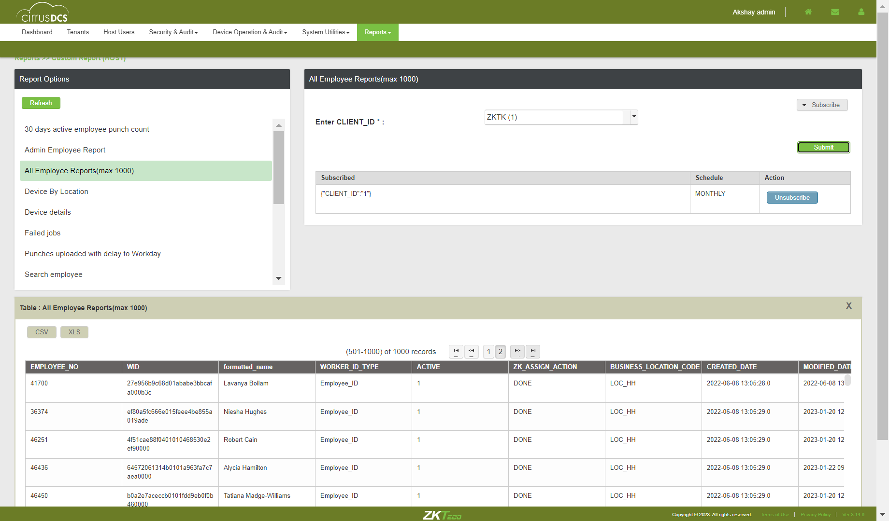
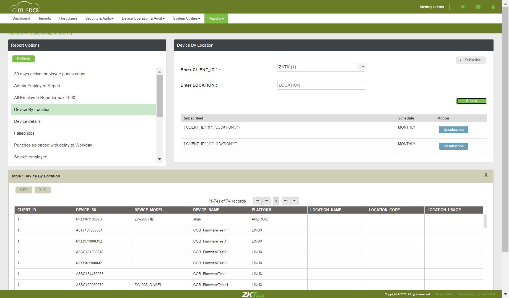

-
Reports
0h 17m 12s+53ms
18:00:14 pmReports
04.12.2023 18:00:14 04.12.2023 18:17:26 0h 17m 12s+53ms@CirrusDCSVerify whether user is able to click on "Reports" modulecom.zkteco.cirrusdcs.stepDefinitions.CirrusDCS.i_initialize_drivers_for_DCS_automation()Driver InitializedGiven Login to the Host accountThen Click on the Reports ModuleThen verify the Reports ModuleVerify whether user is able to click on "Clock Usage Report" sub modulecom.zkteco.cirrusdcs.stepDefinitions.CirrusDCS.i_initialize_drivers_for_DCS_automation()Driver InitializedGiven Login to the Host accountThen Click on the Reports ModuleThen click on the Clock Usage ReportThen User should be able to click on the "Clock usage Report" sub module and observe the Client List,Clock Usage Report Details,Verify whether user is able to view the Client List blockcom.zkteco.cirrusdcs.stepDefinitions.CirrusDCS.i_initialize_drivers_for_DCS_automation()Driver InitializedGiven Login to the Host accountThen Click on the Reports ModuleThen click on the Clock Usage ReportThen Verify User should be able to view the Client List block and observe all fieldsVerify whether user is able to view the Clock Usage Report Detailscom.zkteco.cirrusdcs.stepDefinitions.CirrusDCS.i_initialize_drivers_for_DCS_automation()Driver InitializedGiven Login to the Host accountThen Click on the Reports ModuleThen click on the Clock Usage ReportThen Verify User should be able to view the Clock Usage Report Details and view all fieldsVerify whether user is able to search the tenant by tenant codecom.zkteco.cirrusdcs.stepDefinitions.CirrusDCS.i_initialize_drivers_for_DCS_automation()Driver InitializedGiven Login to the Host accountThen Click on the Reports ModuleThen click on the Clock Usage ReportThen click on the Serach TextfieldThen Verify the user is able to search the tenant by tenant codeVerify whether user is able to search the tenant by tenant codecom.zkteco.cirrusdcs.stepDefinitions.CirrusDCS.i_initialize_drivers_for_DCS_automation()Driver InitializedGiven Login to the Host accountThen Click on the Reports ModuleThen click on the Clock Usage ReportThen click on the Serach Textfield and Enter the tenant who are not present in the client listThen User should not be able to search that tenant who are not present in the client listVerify whether user is able to click on the Records per page buttoncom.zkteco.cirrusdcs.stepDefinitions.CirrusDCS.i_initialize_drivers_for_DCS_automation()Driver InitializedGiven Login to the Host accountThen Click on the Reports ModuleThen click on the Clock Usage ReportThen click on the Records per page buttonThen Verify User should be able to click on the Records per page button and three options should displayVerify whether user is able to click on the forword buttoncom.zkteco.cirrusdcs.stepDefinitions.CirrusDCS.i_initialize_drivers_for_DCS_automation()Driver InitializedGiven Login to the Host accountThen Click on the Reports ModuleThen click on the Clock Usage ReportThen Verify user is able to click on the forword buttonVerify whether user is able to click on the Back buttoncom.zkteco.cirrusdcs.stepDefinitions.CirrusDCS.i_initialize_drivers_for_DCS_automation()Driver InitializedGiven Login to the Host accountThen Click on the Reports ModuleThen click on the Clock Usage ReportThen Verify user is able to click on the Back buttonsVerify whether user is able to click on the First page buttoncom.zkteco.cirrusdcs.stepDefinitions.CirrusDCS.i_initialize_drivers_for_DCS_automation()Driver InitializedGiven Login to the Host accountThen Click on the Reports ModuleThen click on the Clock Usage ReportThen Verify user is able to click on the First page buttonVerify whether user is able to click on the Last page buttoncom.zkteco.cirrusdcs.stepDefinitions.CirrusDCS.i_initialize_drivers_for_DCS_automation()Driver InitializedGiven Login to the Host accountThen Click on the Reports ModuleThen click on the Clock Usage ReportThen Verify user is able to click on the Last page buttonVerify whether user is able to Get the Clock Usage Report Detailscom.zkteco.cirrusdcs.stepDefinitions.CirrusDCS.i_initialize_drivers_for_DCS_automation()Driver InitializedGiven Login to the Host accountThen Click on the Reports ModuleThen click on the Clock Usage ReportThen click on the Serach TextfieldThen Verify the user is able to search the tenant by tenant codeThen click on from date text fieldThen click on the To date text FieldThen click on the Go buttonThen Verify user is able to Get the Clock Usage Report Details on the screenVerify whether user is able to click on the Pegination buttonscom.zkteco.cirrusdcs.stepDefinitions.CirrusDCS.i_initialize_drivers_for_DCS_automation()Driver InitializedGiven Login to the Host accountThen Click on the Reports ModuleThen click on the Clock Usage ReportThen click on the Serach TextfieldThen click on from date text fieldThen click on the To date text FieldThen click on the Go buttonThen I Click on the Last Forward Btn andLast Page is should be displayedThen I Click on the firstPage backward Btn and first Page is should be displayedVerify whether user is able to click on the Records per page buttoncom.zkteco.cirrusdcs.stepDefinitions.CirrusDCS.i_initialize_drivers_for_DCS_automation()Driver InitializedGiven Login to the Host accountThen Click on the Reports ModuleThen click on the Clock Usage ReportThen click on the Serach TextfieldThen click on from date text fieldThen click on the To date text FieldThen click on the Go buttonThen Verify User should be able to click on the Records per page button and three options should displayVerify whether user is able to click on the forword buttoncom.zkteco.cirrusdcs.stepDefinitions.CirrusDCS.i_initialize_drivers_for_DCS_automation()Driver InitializedGiven Login to the Host accountThen Click on the Reports ModuleThen click on the Clock Usage ReportThen click on the Serach TextfieldThen click on from date text fieldThen click on the To date text FieldThen click on the Go buttonThen Verify user should be to click on the forword buttonVerify whether user is able to click on the Back buttoncom.zkteco.cirrusdcs.stepDefinitions.CirrusDCS.i_initialize_drivers_for_DCS_automation()Driver InitializedGiven Login to the Host accountThen Click on the Reports ModuleThen click on the Clock Usage ReportThen click on the Serach TextfieldThen click on from date text fieldThen click on the To date text FieldThen click on the Go buttonThen Verify user should be to click on the Back buttonVerify whether user is able to click on the First page buttoncom.zkteco.cirrusdcs.stepDefinitions.CirrusDCS.i_initialize_drivers_for_DCS_automation()Driver InitializedGiven Login to the Host accountThen Click on the Reports ModuleThen click on the Clock Usage ReportThen click on the Serach TextfieldThen click on from date text fieldThen click on the To date text FieldThen click on the Go buttonThen Verify user is should be to click on the First page buttonVerify whether user is able to click on the Last page buttoncom.zkteco.cirrusdcs.stepDefinitions.CirrusDCS.i_initialize_drivers_for_DCS_automation()Driver InitializedGiven Login to the Host accountThen Click on the Reports ModuleThen click on the Clock Usage ReportThen click on the Serach TextfieldThen click on from date text fieldThen click on the To date text FieldThen click on the Go buttonThen Verify user is should be to click on the Last page buttonVerify whether user is able to export the Clock Usage Report Details in PDF formcom.zkteco.cirrusdcs.stepDefinitions.CirrusDCS.i_initialize_drivers_for_DCS_automation()Driver InitializedGiven Login to the Host accountThen Click on the Reports ModuleThen click on the Clock Usage ReportThen click on the Serach TextfieldThen Verify the user is able to search the tenant by tenant codeThen click on from date text fieldThen click on the To date text FieldThen click on the Go buttonThen click on the export as PDF buttonThen Verify user is able to export the Clock Usage Report Details in PDF formVerify whether user is able to export the Clock Usage Report Details in CSV formcom.zkteco.cirrusdcs.stepDefinitions.CirrusDCS.i_initialize_drivers_for_DCS_automation()Driver InitializedGiven Login to the Host accountThen Click on the Reports ModuleThen click on the Clock Usage ReportThen click on the Serach TextfieldThen Verify the user is able to search the tenant by tenant codeThen click on from date text fieldThen click on the To date text FieldThen click on the Go buttonThen click on the export as CSV formThen Verify user is able to export the Clock Usage Report Details in CSV formVerify whether user is able to export the Clock Usage Report Details in Excel formcom.zkteco.cirrusdcs.stepDefinitions.CirrusDCS.i_initialize_drivers_for_DCS_automation()Driver InitializedGiven Login to the Host accountThen Click on the Reports ModuleThen click on the Clock Usage ReportThen click on the Serach TextfieldThen Verify the user is able to search the tenant by tenant codeThen click on from date text fieldThen click on the To date text FieldThen click on the Go buttonThen click on the export as Excel formThen Verify user is able to export the Clock Usage Report Details in Excel formVerify whether user is able to click on SQL Reports sub modulecom.zkteco.cirrusdcs.stepDefinitions.CirrusDCS.i_initialize_drivers_for_DCS_automation()Driver InitializedGiven Login to the Host accountThen Click on the Reports ModuleThen click on the SQL Reports sub moduleThen Verify User should be able to click on the SQL Reports and observe the Report Options block is displayedVerify whether user is able to view the "Report options" blockcom.zkteco.cirrusdcs.stepDefinitions.CirrusDCS.i_initialize_drivers_for_DCS_automation()Driver InitializedGiven Login to the Host accountThen Click on the Reports ModuleThen click on the SQL Reports sub moduleThen User should be able to view the Report options block and observe the LinksVerify whether user is able to click on the Refresh buttoncom.zkteco.cirrusdcs.stepDefinitions.CirrusDCS.i_initialize_drivers_for_DCS_automation()Driver InitializedGiven Login to the Host accountThen Click on the Reports ModuleThen click on the SQL Reports sub moduleThen click on the Refresh buttonThen Verify user is able to click on the Refresh buttonVerify whether user is able to click on the Admin Employees linkcom.zkteco.cirrusdcs.stepDefinitions.CirrusDCS.i_initialize_drivers_for_DCS_automation()Driver InitializedGiven Login to the Host accountThen Click on the Reports ModuleThen click on the SQL Reports sub moduleThen click on the Admin Employees linkThen Verify User should be able to click on the Admin Employees and all fields should displayVerify whether user is able to click on the Subscribe dropdown buttoncom.zkteco.cirrusdcs.stepDefinitions.CirrusDCS.i_initialize_drivers_for_DCS_automation()Driver InitializedGiven Login to the Host accountThen Click on the Reports ModuleThen click on the SQL Reports sub moduleThen click on the Admin Employees linkThen click on the Subscribe dropdown buttonThen Verify user is able to click on the Subscribe dropdown buttonVerify whether user is able to mouse hover action Subscribe dropdown buttoncom.zkteco.cirrusdcs.stepDefinitions.CirrusDCS.i_initialize_drivers_for_DCS_automation()Driver InitializedGiven Login to the Host accountThen Click on the Reports ModuleThen click on the SQL Reports sub moduleThen click on the Admin Employees linkThen mouse hover action on the Subscribe dropdown buttonThen Verify user is able to mouse hover action Subscribe dropdown buttonUser is able to click on the Subscribe button and alert message Select Client ID popup should display on the top of the right cornercom.zkteco.cirrusdcs.stepDefinitions.CirrusDCS.i_initialize_drivers_for_DCS_automation()Driver InitializedGiven Login to the Host accountThen Click on the Reports ModuleThen click on the SQL Reports sub moduleThen click on the Admin Employees linkThen click on the Subscribe dropdown buttonThen click on the DailyThen click on the Subscribe dropdown buttonThen Verify Select Client ID popup should display on the top of the right cornerUser should be able to click on the Subscribe button Successfully Subscribed popup message is displaycom.zkteco.cirrusdcs.stepDefinitions.CirrusDCS.i_initialize_drivers_for_DCS_automation()Driver InitializedGiven Login to the Host accountThen Click on the Reports ModuleThen click on the SQL Reports sub moduleThen click on the Admin Employees linkThen Select the Client IDThen click on the Subscribe dropdown buttonThen click on the DailyThen click on the Subscribe dropdown buttonThen Verify Successfully Subscribed popup message is displayAfter the subscribe Daily,verify whether user is able to view the table with all columnscom.zkteco.cirrusdcs.stepDefinitions.CirrusDCS.i_initialize_drivers_for_DCS_automation()Driver InitializedGiven Login to the Host accountThen Click on the Reports ModuleThen click on the SQL Reports sub moduleThen click on the Admin Employees linkThen Select the Client IDThen click on the Subscribe dropdown buttonThen click on the DailyThen Verify user is able to view the table with all columnsAfter the subscribe Monthly,verify whether user is able to view the table with all columnscom.zkteco.cirrusdcs.stepDefinitions.CirrusDCS.i_initialize_drivers_for_DCS_automation()Driver InitializedGiven Login to the Host accountThen Click on the Reports ModuleThen click on the SQL Reports sub moduleThen click on the Admin Employees linkThen Select the Client IDThen click on the Subscribe dropdown buttonThen click on the MonthlyThen Verify user is able to view the table with all columnsAfter the subscribe weekly,verify whether user is able to view the table with all columnscom.zkteco.cirrusdcs.stepDefinitions.CirrusDCS.i_initialize_drivers_for_DCS_automation()Driver InitializedGiven Login to the Host accountThen Click on the Reports ModuleThen click on the SQL Reports sub moduleThen click on the Admin Employees linkThen Select the Client IDThen click on the Subscribe dropdown buttonThen click on the weeklyThen Verify user is able to view the table with all columnsVerify whether user is able to unsubscribecom.zkteco.cirrusdcs.stepDefinitions.CirrusDCS.i_initialize_drivers_for_DCS_automation()Driver InitializedGiven Login to the Host accountThen Click on the Reports ModuleThen click on the SQL Reports sub moduleThen click on the Admin Employees linkThen Select the Client IDThen click on the Subscribe dropdown buttonThen click on the weeklyThen click on the unsubscribeThen Verify the unsubscribe action is doneVerify whether user is able to select the client id from the dropdowncom.zkteco.cirrusdcs.stepDefinitions.CirrusDCS.i_initialize_drivers_for_DCS_automation()Driver InitializedGiven Login to the Host accountThen Click on the Reports ModuleThen click on the SQL Reports sub moduleThen click on the Admin Employees linkThen Select the Client IDThen Verify the user is able to select the client id from the dropdownVerify whether user is able to enter the device serial numbercom.zkteco.cirrusdcs.stepDefinitions.CirrusDCS.i_initialize_drivers_for_DCS_automation()Driver InitializedGiven Login to the Host accountThen Click on the Reports ModuleThen click on the SQL Reports sub moduleThen click on the Admin Employees linkThen click on the device serial numberThen verify the device serial number is displayedVerify whether user is able to enter the organization namecom.zkteco.cirrusdcs.stepDefinitions.CirrusDCS.i_initialize_drivers_for_DCS_automation()Driver InitializedGiven Login to the Host accountThen Click on the Reports ModuleThen click on the SQL Reports sub moduleThen click on the Admin Employees linkThen click on the organization nameThen verify the organization nameVerify whether user is able to click on the Submit buttoncom.zkteco.cirrusdcs.stepDefinitions.CirrusDCS.i_initialize_drivers_for_DCS_automation()Driver InitializedGiven Login to the Host accountThen Click on the Reports ModuleThen click on the SQL Reports sub moduleThen click on the Admin Employees linkThen click on the submit buttonThen verify user is able to click on the Submit buttonUser should be able to click on the subkmit button No records found popup message should displaycom.zkteco.cirrusdcs.stepDefinitions.CirrusDCS.i_initialize_drivers_for_DCS_automation()Driver InitializedGiven Login to the Host accountThen Click on the Reports ModuleThen click on the SQL Reports sub moduleThen click on the Admin Employees linkThen Select the Client IDThen Enter the Device SNThen Enter the ORGANIZATION NAMEThen click on the submit buttonThen verify No records found popup message should displayUser should be able to click on the submit button and Admin Employees report should display with list of all columnscom.zkteco.cirrusdcs.stepDefinitions.CirrusDCS.i_initialize_drivers_for_DCS_automation()Driver InitializedGiven Login to the Host accountThen Click on the Reports ModuleThen click on the SQL Reports sub moduleThen click on the Admin Employees linkThen Select the Client IDThen click on the Subscribe dropdown buttonThen click on the MonthlyThen click on the submit buttonThen verify Admin Employees report should display with list of all columnsVerify whether user is able to click on the CSV buttoncom.zkteco.cirrusdcs.stepDefinitions.CirrusDCS.i_initialize_drivers_for_DCS_automation()Driver InitializedGiven Login to the Host accountThen Click on the Reports ModuleThen click on the SQL Reports sub moduleThen click on the Admin Employees linkThen Select the Client IDThen click on the Subscribe dropdown buttonThen click on the MonthlyThen click on the submit buttonThen click on the CSV buttonThen verify Admin Employees Report should be download in CSV formatVerify whether user is able to click on the XLS buttoncom.zkteco.cirrusdcs.stepDefinitions.CirrusDCS.i_initialize_drivers_for_DCS_automation()Driver InitializedGiven Login to the Host accountThen Click on the Reports ModuleThen click on the SQL Reports sub moduleThen click on the Admin Employees linkThen Select the Client IDThen click on the Subscribe dropdown buttonThen click on the MonthlyThen click on the submit buttonThen click on the XLS buttonThen verify Admin Employees Report should be download in XLS formatVerify whether user is able to click on the forword buttoncom.zkteco.cirrusdcs.stepDefinitions.CirrusDCS.i_initialize_drivers_for_DCS_automation()Driver InitializedGiven Login to the Host accountThen Click on the Reports ModuleThen click on the SQL Reports sub moduleThen click on the Admin Employees linkThen Select the Client IDThen click on the Subscribe dropdown buttonThen click on the MonthlyThen click on the submit buttonThen verify Admin Employees report should display with list of all columnsThen Verify user is able to click on the forword buttonVerify whether user is able to click on the Back buttoncom.zkteco.cirrusdcs.stepDefinitions.CirrusDCS.i_initialize_drivers_for_DCS_automation()Driver InitializedGiven Login to the Host accountThen Click on the Reports ModuleThen click on the SQL Reports sub moduleThen click on the Admin Employees linkThen Select the Client IDThen click on the Subscribe dropdown buttonThen click on the MonthlyThen click on the submit buttonThen verify Admin Employees report should display with list of all columnsThen Verify user is able to click on the Back buttonsVerify whether user is able to click on the First page buttoncom.zkteco.cirrusdcs.stepDefinitions.CirrusDCS.i_initialize_drivers_for_DCS_automation()Driver InitializedGiven Login to the Host accountThen Click on the Reports ModuleThen click on the SQL Reports sub moduleThen click on the Admin Employees linkThen Select the Client IDThen click on the Subscribe dropdown buttonThen click on the MonthlyThen click on the submit buttonThen verify Admin Employees report should display with list of all columnsThen Verify user is able to click on the First page buttonVerify whether user is able to click on the Last page buttoncom.zkteco.cirrusdcs.stepDefinitions.CirrusDCS.i_initialize_drivers_for_DCS_automation()Driver InitializedGiven Login to the Host accountThen Click on the Reports ModuleThen click on the SQL Reports sub moduleThen click on the Admin Employees linkThen Select the Client IDThen click on the Subscribe dropdown buttonThen click on the MonthlyThen click on the submit buttonThen verify Admin Employees report should display with list of all columnsThen Verify user is able to click on the Last page buttonverify whether User is able to click on the Cross markcom.zkteco.cirrusdcs.stepDefinitions.CirrusDCS.i_initialize_drivers_for_DCS_automation()Driver InitializedGiven Login to the Host accountThen Click on the Reports ModuleThen click on the SQL Reports sub moduleThen click on the Admin Employees linkThen Select the Client IDThen click on the Subscribe dropdown buttonThen click on the MonthlyThen click on the submit buttonThen click on the Cross markThen verify Admin Employees Report should be disappear from the screenUser should be able to click on the All Employee Report(max 1000) and all fields should displaycom.zkteco.cirrusdcs.stepDefinitions.CirrusDCS.i_initialize_drivers_for_DCS_automation()Driver InitializedGiven Login to the Host accountThen Click on the Reports ModuleThen click on the SQL Reports sub moduleThen click on All Employee Report linkThen verify All Employee Report and all fields should displayVerify whether user is able to click on the Subscribe dropdown buttoncom.zkteco.cirrusdcs.stepDefinitions.CirrusDCS.i_initialize_drivers_for_DCS_automation()Driver InitializedGiven Login to the Host accountThen Click on the Reports ModuleThen click on the SQL Reports sub moduleThen click on All Employee Report linkThen click on the Subscribe dropdown buttonThen Verify user is able to click on the Subscribe dropdown buttonVerify whether user is able to mouse hover action Subscribe dropdown buttoncom.zkteco.cirrusdcs.stepDefinitions.CirrusDCS.i_initialize_drivers_for_DCS_automation()Driver InitializedGiven Login to the Host accountThen Click on the Reports ModuleThen click on the SQL Reports sub moduleThen click on All Employee Report linkThen mouse hover action on the Subscribe dropdown buttonThen Verify user is able to mouse hover action Subscribe dropdown buttonVerify whether user is able to click on the Submit buttoncom.zkteco.cirrusdcs.stepDefinitions.CirrusDCS.i_initialize_drivers_for_DCS_automation()Driver InitializedGiven Login to the Host accountThen Click on the Reports ModuleThen click on the SQL Reports sub moduleThen click on All Employee Report linkThen click on submit buttonThen Verify Select Client ID popup should display on the top of the right cornerVerify whether user is able to subscribe based on the Daily/weekly/monthlycom.zkteco.cirrusdcs.stepDefinitions.CirrusDCS.i_initialize_drivers_for_DCS_automation()Driver InitializedGiven Login to the Host accountThen Click on the Reports ModuleThen click on the SQL Reports sub moduleThen click on All Employee Report linkThen click on the Subscribe dropdown buttonThen click on the DailyThen click on the Subscribe dropdown buttonThen Verify Select Client ID popup should display on the top of the right cornerVerify whether Useris able to click on the Subscribe button and Successfully Subscribed popup message should displaycom.zkteco.cirrusdcs.stepDefinitions.CirrusDCS.i_initialize_drivers_for_DCS_automation()Driver InitializedGiven Login to the Host accountThen Click on the Reports ModuleThen click on the SQL Reports sub moduleThen click on All Employee Report linkThen Select the Client IDThen click on the Subscribe dropdown buttonThen click on the DailyThen click on the Subscribe dropdown buttonThen Verify Successfully Subscribed popup message is displayAfter the subscribe Daily,verify whether user is able to view the table with all columnscom.zkteco.cirrusdcs.stepDefinitions.CirrusDCS.i_initialize_drivers_for_DCS_automation()Driver InitializedGiven Login to the Host accountThen Click on the Reports ModuleThen click on the SQL Reports sub moduleThen click on All Employee Report linkThen Select the Client IDThen click on the Subscribe dropdown buttonThen click on the DailyThen Verify user is able to view the table with all columnsAfter the subscribe Monthly,verify whether user is able to view the table with all columnscom.zkteco.cirrusdcs.stepDefinitions.CirrusDCS.i_initialize_drivers_for_DCS_automation()Driver InitializedGiven Login to the Host accountThen Click on the Reports ModuleThen click on the SQL Reports sub moduleThen click on All Employee Report linkThen Select the Client IDThen click on the Subscribe dropdown buttonThen click on the MonthlyThen Verify user is able to view the table with all columnsAfter the subscribe weekly,verify whether user is able to view the table with all columnscom.zkteco.cirrusdcs.stepDefinitions.CirrusDCS.i_initialize_drivers_for_DCS_automation()Driver InitializedGiven Login to the Host accountThen Click on the Reports ModuleThen click on the SQL Reports sub moduleThen click on All Employee Report linkThen Select the Client IDThen click on the Subscribe dropdown buttonThen click on the weeklyThen Verify user is able to view the table with all columnsVerify whether user is able to unsubscribecom.zkteco.cirrusdcs.stepDefinitions.CirrusDCS.i_initialize_drivers_for_DCS_automation()Driver InitializedGiven Login to the Host accountThen Click on the Reports ModuleThen click on the SQL Reports sub moduleThen click on All Employee Report linkThen Select the Client IDThen click on the Subscribe dropdown buttonThen click on the weeklyThen click on the unsubscribeThen Verify the unsubscribe action is doneUser should be able to click on the submit button and All Employee Report(max 1000) report should display with list of all columnscom.zkteco.cirrusdcs.stepDefinitions.CirrusDCS.i_initialize_drivers_for_DCS_automation()Driver InitializedGiven Login to the Host accountThen Click on the Reports ModuleThen click on the SQL Reports sub moduleThen click on All Employee Report linkThen Select the Client IDThen click on the Subscribe dropdown buttonThen click on the MonthlyThen click on submit buttonThen verify All Employee report should display with list of all columnsVerify whether user is able to click on the CSV buttoncom.zkteco.cirrusdcs.stepDefinitions.CirrusDCS.i_initialize_drivers_for_DCS_automation()Driver InitializedGiven Login to the Host accountThen Click on the Reports ModuleThen click on the SQL Reports sub moduleThen click on All Employee Report linkThen Select the Client IDThen click on the Subscribe dropdown buttonThen click on the MonthlyThen click on submit buttonThen click on the CSV buttonThen verifyAll Employee report should be download in CSV formatVerify whether user is able to click on the XLS buttoncom.zkteco.cirrusdcs.stepDefinitions.CirrusDCS.i_initialize_drivers_for_DCS_automation()Driver InitializedGiven Login to the Host accountThen Click on the Reports ModuleThen click on the SQL Reports sub moduleThen click on All Employee Report linkThen Select the Client IDThen click on the Subscribe dropdown buttonThen click on the MonthlyThen click on submit buttonThen click on the XLS buttonThen verify All Employee Report should be download in XLS formatVerify whether user is able to click on the Pegination buttonscom.zkteco.cirrusdcs.stepDefinitions.CirrusDCS.i_initialize_drivers_for_DCS_automation()Driver InitializedGiven Login to the Host accountThen Click on the Reports ModuleThen click on the SQL Reports sub moduleThen click on All Employee Report linkThen Select the Client IDThen click on the Subscribe dropdown buttonThen click on the MonthlyThen click on submit buttonThen I Click on the Last Forward Btn andLast Page is displayedThen I Click on the firstPage backward Btn and first Page is displayedcom.zkteco.cirrusdcs.stepDefinitions.CirrusDCS.teardown(io.cucumber.java.Scenario)Verify whether user is able to click on the forword buttoncom.zkteco.cirrusdcs.stepDefinitions.CirrusDCS.i_initialize_drivers_for_DCS_automation()Driver InitializedGiven Login to the Host accountThen Click on the Reports ModuleThen click on the SQL Reports sub moduleThen click on All Employee Report linkThen Select the Client IDThen click on the Subscribe dropdown buttonThen click on the MonthlyThen click on submit buttonThen Verify user is able to click on the forword buttonVerify whether user is able to click on the Back buttoncom.zkteco.cirrusdcs.stepDefinitions.CirrusDCS.i_initialize_drivers_for_DCS_automation()Driver InitializedGiven Login to the Host accountThen Click on the Reports ModuleThen click on the SQL Reports sub moduleThen click on All Employee Report linkThen Select the Client IDThen click on the Subscribe dropdown buttonThen click on the MonthlyThen click on submit buttonThen Verify user is able to click on the Back buttonsVerify whether user is able to click on the First page buttoncom.zkteco.cirrusdcs.stepDefinitions.CirrusDCS.i_initialize_drivers_for_DCS_automation()Driver InitializedGiven Login to the Host accountThen Click on the Reports ModuleThen click on the SQL Reports sub moduleThen click on All Employee Report linkThen Select the Client IDThen click on the Subscribe dropdown buttonThen click on the MonthlyThen click on submit buttonThen Verify user is able to click on the First page buttonVerify whether user is able to click on the Last page buttoncom.zkteco.cirrusdcs.stepDefinitions.CirrusDCS.i_initialize_drivers_for_DCS_automation()Driver InitializedGiven Login to the Host accountThen Click on the Reports ModuleThen click on the SQL Reports sub moduleThen click on All Employee Report linkThen Select the Client IDThen click on the Subscribe dropdown buttonThen click on the MonthlyThen click on submit buttonThen Verify user is able to click on the Last page buttonverify whether User is able to click on the Cross markcom.zkteco.cirrusdcs.stepDefinitions.CirrusDCS.i_initialize_drivers_for_DCS_automation()Driver InitializedGiven Login to the Host accountThen Click on the Reports ModuleThen click on the SQL Reports sub moduleThen click on All Employee Report linkThen Select the Client IDThen click on the Subscribe dropdown buttonThen click on the MonthlyThen click on submit buttonThen click on the Cross markThen verify Admin Employees Report should be disappear from the screenUser should be able to click on the Device by location link and all fields should displaycom.zkteco.cirrusdcs.stepDefinitions.CirrusDCS.i_initialize_drivers_for_DCS_automation()Driver InitializedGiven Login to the Host accountThen Click on the Reports ModuleThen click on the SQL Reports sub moduleThen click on Device by location linkThen verify All Device by location link and all fields should displayVerify whether user is able to click on the Subscribe dropdown buttoncom.zkteco.cirrusdcs.stepDefinitions.CirrusDCS.i_initialize_drivers_for_DCS_automation()Driver InitializedGiven Login to the Host accountThen Click on the Reports ModuleThen click on the SQL Reports sub moduleThen click on Device by location linkThen click on the Subscribe dropdown buttonThen Verify user is able to click on the Subscribe dropdown buttonVerify whether user is able to mouse hover action Subscribe dropdown buttoncom.zkteco.cirrusdcs.stepDefinitions.CirrusDCS.i_initialize_drivers_for_DCS_automation()Driver InitializedGiven Login to the Host accountThen Click on the Reports ModuleThen click on the SQL Reports sub moduleThen click on Device by location linkThen mouse hover action on the Subscribe dropdown buttonThen Verify user is able to mouse hover action Subscribe dropdown buttonVerify whether user is able to select the client id from the dropdowncom.zkteco.cirrusdcs.stepDefinitions.CirrusDCS.i_initialize_drivers_for_DCS_automation()Driver InitializedGiven Login to the Host accountThen Click on the Reports ModuleThen click on the SQL Reports sub moduleThen click on Device by location linkThen Select the Client IDThen Verify user is able to select the client id from the dropdownVerify whether user is able to Enter the location in the Location text fieldcom.zkteco.cirrusdcs.stepDefinitions.CirrusDCS.i_initialize_drivers_for_DCS_automation()Driver InitializedGiven Login to the Host accountThen Click on the Reports ModuleThen click on the SQL Reports sub moduleThen click on Device by location linkThen Select the Client IDThen click on the location text fieldThen Verify user should be able to Enter the location in the Location text fieldVerify whether user is able to click on the Submit buttoncom.zkteco.cirrusdcs.stepDefinitions.CirrusDCS.i_initialize_drivers_for_DCS_automation()Driver InitializedGiven Login to the Host accountThen Click on the Reports ModuleThen click on the SQL Reports sub moduleThen click on Device by location linkThen click on submit buttonThen Verify Select Client ID popup should display on the top of the right cornerVerify whether Useris able to click on the Subscribe button and Successfully Subscribed popup message should displaycom.zkteco.cirrusdcs.stepDefinitions.CirrusDCS.i_initialize_drivers_for_DCS_automation()Driver InitializedGiven Login to the Host accountThen Click on the Reports ModuleThen click on the SQL Reports sub moduleThen click on Device by location linkThen Select the Client IDThen click on the Subscribe dropdown buttonThen click on the DailyThen click on the Subscribe dropdown buttonThen Verify Successfully Subscribed popup message is displayVerify whether user is able to subscribe based on the Daily/weekly/monthlycom.zkteco.cirrusdcs.stepDefinitions.CirrusDCS.i_initialize_drivers_for_DCS_automation()Driver InitializedGiven Login to the Host accountThen Click on the Reports ModuleThen click on the SQL Reports sub moduleThen click on Device by location linkThen click on the Subscribe dropdown buttonThen click on the DailyThen click on the Subscribe dropdown buttonThen Verify Select Client ID popup should display on the top of the right cornerAfter the subscribe Daily,verify whether user is able to view the table with all columnscom.zkteco.cirrusdcs.stepDefinitions.CirrusDCS.i_initialize_drivers_for_DCS_automation()Driver InitializedGiven Login to the Host accountThen Click on the Reports ModuleThen click on the SQL Reports sub moduleThen click on Device by location linkThen Select the Client IDThen click on the Subscribe dropdown buttonThen click on the DailyThen Verify user is able to view the table with all columnsAfter the subscribe Monthly,verify whether user is able to view the table with all columnscom.zkteco.cirrusdcs.stepDefinitions.CirrusDCS.i_initialize_drivers_for_DCS_automation()Driver InitializedGiven Login to the Host accountThen Click on the Reports ModuleThen click on the SQL Reports sub moduleThen click on Device by location linkThen Select the Client IDThen click on the Subscribe dropdown buttonThen click on the MonthlyThen Verify user is able to view the table with all columnsAfter the subscribe weekly,verify whether user is able to view the table with all columnscom.zkteco.cirrusdcs.stepDefinitions.CirrusDCS.i_initialize_drivers_for_DCS_automation()Driver InitializedGiven Login to the Host accountThen Click on the Reports ModuleThen click on the SQL Reports sub moduleThen click on Device by location linkThen Select the Client IDThen click on the Subscribe dropdown buttonThen click on the weeklyThen Verify user is able to view the table with all columnsVerify whether user is able to unsubscribecom.zkteco.cirrusdcs.stepDefinitions.CirrusDCS.i_initialize_drivers_for_DCS_automation()Driver InitializedGiven Login to the Host accountThen Click on the Reports ModuleThen click on the SQL Reports sub moduleThen click on Device by location linkThen Select the Client IDThen click on the Subscribe dropdown buttonThen click on the weeklyThen click on the unsubscribeThen Verify the unsubscribe action is doneVerify whether user is able to click on the Submit buttoncom.zkteco.cirrusdcs.stepDefinitions.CirrusDCS.i_initialize_drivers_for_DCS_automation()Driver InitializedGiven Login to the Host accountThen Click on the Reports ModuleThen click on the SQL Reports sub moduleThen click on Device by location linkThen click on submit buttonThen Verify Select Client ID popup should display on the top of the right cornerUser should be able to click on the submit button Table should display on the screen with list of below columnscom.zkteco.cirrusdcs.stepDefinitions.CirrusDCS.i_initialize_drivers_for_DCS_automation()Driver InitializedGiven Login to the Host accountThen Click on the Reports ModuleThen click on the SQL Reports sub moduleThen click on Device by location linkThen Select the Client IDThen click on the Subscribe dropdown buttonThen click on the MonthlyThen click on submit buttonThen verify Device by location report should display with list of all columnsVerify whether user is able to click on the CSV buttoncom.zkteco.cirrusdcs.stepDefinitions.CirrusDCS.i_initialize_drivers_for_DCS_automation()Driver InitializedGiven Login to the Host accountThen Click on the Reports ModuleThen click on the SQL Reports sub moduleThen click on Device by location linkThen Select the Client IDThen click on the Subscribe dropdown buttonThen click on the MonthlyThen click on submit buttonThen click on the CSV buttonThen verifyAll Employee report should be download in CSV formatVerify whether user is able to click on the XLS buttoncom.zkteco.cirrusdcs.stepDefinitions.CirrusDCS.i_initialize_drivers_for_DCS_automation()Driver InitializedGiven Login to the Host accountThen Click on the Reports ModuleThen click on the SQL Reports sub moduleThen click on Device by location linkThen Select the Client IDThen click on the Subscribe dropdown buttonThen click on the MonthlyThen click on submit buttonThen click on the XLS buttonThen verify All Employee Report should be download in XLS formatVerify whether user is able to click on the Pegination buttonscom.zkteco.cirrusdcs.stepDefinitions.CirrusDCS.i_initialize_drivers_for_DCS_automation()Driver InitializedGiven Login to the Host accountThen Click on the Reports ModuleThen click on the SQL Reports sub moduleThen click on Device by location linkThen Select the Client IDThen click on the Subscribe dropdown buttonThen click on the MonthlyThen click on submit buttonThen I Click on the Last Forward Btn andLast Page is displayedThen I Click on the firstPage backward Btn and first Page is displayedStep skippedcom.zkteco.cirrusdcs.stepDefinitions.CirrusDCS.teardown(io.cucumber.java.Scenario)Verify whether user is able to click on the forword buttoncom.zkteco.cirrusdcs.stepDefinitions.CirrusDCS.i_initialize_drivers_for_DCS_automation()Driver InitializedGiven Login to the Host accountThen Click on the Reports ModuleThen click on the SQL Reports sub moduleThen click on Device by location linkThen Select the Client IDThen click on the Subscribe dropdown buttonThen click on the MonthlyThen click on submit buttonThen Verify user is able to click on the forword buttonVerify whether user is able to click on the Back buttoncom.zkteco.cirrusdcs.stepDefinitions.CirrusDCS.i_initialize_drivers_for_DCS_automation()Driver InitializedGiven Login to the Host accountThen Click on the Reports ModuleThen click on the SQL Reports sub moduleThen click on Device by location linkThen Select the Client IDThen click on the Subscribe dropdown buttonThen click on the MonthlyThen click on submit buttonThen Verify user is able to click on the Back buttonsVerify whether user is able to click on the First page buttoncom.zkteco.cirrusdcs.stepDefinitions.CirrusDCS.i_initialize_drivers_for_DCS_automation()Driver InitializedGiven Login to the Host accountThen Click on the Reports ModuleThen click on the SQL Reports sub moduleThen click on Device by location linkThen Select the Client IDThen click on the Subscribe dropdown buttonThen click on the MonthlyThen click on submit buttonThen Verify user is able to click on the First page buttonVerify whether user is able to click on the Last page buttoncom.zkteco.cirrusdcs.stepDefinitions.CirrusDCS.i_initialize_drivers_for_DCS_automation()Driver InitializedGiven Login to the Host accountThen Click on the Reports ModuleThen click on the SQL Reports sub moduleThen click on Device by location linkThen Select the Client IDThen click on the Subscribe dropdown buttonThen click on the MonthlyThen click on submit buttonThen Verify user is able to click on the Last page buttonverify whether User is able to click on the Cross markcom.zkteco.cirrusdcs.stepDefinitions.CirrusDCS.i_initialize_drivers_for_DCS_automation()Driver InitializedGiven Login to the Host accountThen Click on the Reports ModuleThen click on the SQL Reports sub moduleThen click on Device by location linkThen Select the Client IDThen click on the Subscribe dropdown buttonThen click on the MonthlyThen click on submit buttonThen click on the Cross markThen verify location Report should be disappear from the screenUser User should be able to click on the Failed jobs and all fields should displaycom.zkteco.cirrusdcs.stepDefinitions.CirrusDCS.i_initialize_drivers_for_DCS_automation()Driver InitializedGiven Login to the Host accountThen Click on the Reports ModuleThen click on the SQL Reports sub moduleThen click on Failed jobs linkThen verify Failed jobs and all fields should displayVerify whether user is able to click on the Subscribe dropdown buttoncom.zkteco.cirrusdcs.stepDefinitions.CirrusDCS.i_initialize_drivers_for_DCS_automation()Driver InitializedGiven Login to the Host accountThen Click on the Reports ModuleThen click on the SQL Reports sub moduleThen click on Failed jobs linkThen click on the Subscribe dropdown buttonThen Verify user is able to click on the Subscribe dropdown buttonVerify whether user is able to mouse hover action Subscribe dropdown buttoncom.zkteco.cirrusdcs.stepDefinitions.CirrusDCS.i_initialize_drivers_for_DCS_automation()Driver InitializedGiven Login to the Host accountThen Click on the Reports ModuleThen click on the SQL Reports sub moduleThen click on Failed jobs linkThen mouse hover action on the Subscribe dropdown buttonThen Verify user is able to mouse hover action Subscribe dropdown buttonVerify whether user is able to subscribe based on the Daily/weekly/monthlycom.zkteco.cirrusdcs.stepDefinitions.CirrusDCS.i_initialize_drivers_for_DCS_automation()Driver InitializedGiven Login to the Host accountThen Click on the Reports ModuleThen click on the SQL Reports sub moduleThen click on Failed jobs linkThen click on the Subscribe dropdown button in Failed jobsThen click on the DailyThen Verify Successfully Subscribed popup message is displayVerify whether user is able to unsubscribecom.zkteco.cirrusdcs.stepDefinitions.CirrusDCS.i_initialize_drivers_for_DCS_automation()Driver InitializedGiven Login to the Host accountThen Click on the Reports ModuleThen click on the SQL Reports sub moduleThen click on Failed jobs linkThen click on the unsubscribeThen Verify the unsubscribe action is doneUser User should be able to click on the Punches uploaded with delay to Workday link all fields should displaycom.zkteco.cirrusdcs.stepDefinitions.CirrusDCS.i_initialize_drivers_for_DCS_automation()Driver InitializedGiven Login to the Host accountThen Click on the Reports ModuleThen click on the SQL Reports sub moduleThen click on Failed jobs Punches uploaded with delay to Workday linkThen verify Punches uploaded with delay to Workday link all fields should displayVerify whether user is able to click on the Subscribe dropdown buttoncom.zkteco.cirrusdcs.stepDefinitions.CirrusDCS.i_initialize_drivers_for_DCS_automation()Driver InitializedGiven Login to the Host accountThen Click on the Reports ModuleThen click on the SQL Reports sub moduleThen click on Failed jobs Punches uploaded with delay to Workday linkThen click on the Subscribe dropdown buttonThen Verify user is able to click on the Subscribe dropdown buttonVerify whether user is able to mouse hover action Subscribe dropdown buttoncom.zkteco.cirrusdcs.stepDefinitions.CirrusDCS.i_initialize_drivers_for_DCS_automation()Driver InitializedGiven Login to the Host accountThen Click on the Reports ModuleThen click on the SQL Reports sub moduleThen click on Failed jobs Punches uploaded with delay to Workday linkThen mouse hover action on the Subscribe dropdown buttonThen Verify user is able to mouse hover action Subscribe dropdown buttonVerify whether user is able to subscribe based on the Daily/weekly/monthlycom.zkteco.cirrusdcs.stepDefinitions.CirrusDCS.i_initialize_drivers_for_DCS_automation()Driver InitializedGiven Login to the Host accountThen Click on the Reports ModuleThen click on the SQL Reports sub moduleThen click on Failed jobs Punches uploaded with delay to Workday linkThen click on the Subscribe dropdown button in Failed jobsThen click on the DailyThen Verify Successfully Subscribed popup message is displayVerify whether user is able to unsubscribecom.zkteco.cirrusdcs.stepDefinitions.CirrusDCS.i_initialize_drivers_for_DCS_automation()Driver InitializedGiven Login to the Host accountThen Click on the Reports ModuleThen click on the SQL Reports sub moduleThen click on Failed jobs Punches uploaded with delay to Workday linkThen click on the unsubscribeThen Verify the unsubscribe action is doneVerify whether user is able to click on the Search employee linkcom.zkteco.cirrusdcs.stepDefinitions.CirrusDCS.i_initialize_drivers_for_DCS_automation()Driver InitializedGiven Login to the Host accountThen Click on the Reports ModuleThen click on the SQL Reports sub moduleThen click on the Search employee linkThen Verify User should be able to click on the Search employee and all fields should displayVerify whether user is able to select the client id from the dropdowncom.zkteco.cirrusdcs.stepDefinitions.CirrusDCS.i_initialize_drivers_for_DCS_automation()Driver InitializedGiven Login to the Host accountThen Click on the Reports ModuleThen click on the SQL Reports sub moduleThen click on the Search employee linkThen Select the Client IDThen Verify the user is able to select the client id from the dropdownVerify whether user is able to click on the Enter EMPLOYEE_NO Text fieldcom.zkteco.cirrusdcs.stepDefinitions.CirrusDCS.i_initialize_drivers_for_DCS_automation()Driver InitializedGiven Login to the Host accountThen Click on the Reports ModuleThen click on the SQL Reports sub moduleThen click on the Search employee linkThen Enter the EMPLOYEE NO in EMPLOYEE NO Text fieldThen Verify EMPLOYEE NO Text fieldUser should be able to click on the Submit button and employee data report should display on the screencom.zkteco.cirrusdcs.stepDefinitions.CirrusDCS.i_initialize_drivers_for_DCS_automation()Driver InitializedGiven Login to the Host accountThen Click on the Reports ModuleThen click on the SQL Reports sub moduleThen click on the Search employee linkThen Select the Client IDThen Enter the EMPLOYEE NO in EMPLOYEE NO Text fieldThen click on the Subscribe dropdown buttonThen click on the MonthlyThen click on the submit buttonThen verify Employees data report should display with list of all columnsUser should be able to click on the Submit button and Alert message should display on the top right cornercom.zkteco.cirrusdcs.stepDefinitions.CirrusDCS.i_initialize_drivers_for_DCS_automation()Driver InitializedGiven Login to the Host accountThen Click on the Reports ModuleThen click on the SQL Reports sub moduleThen click on the Search employee linkThen click on the submit buttonThen Verify Select Client ID popup should display on the top of the right cornerUser should be able to click on the Submit button and Alert message should display on the top right cornercom.zkteco.cirrusdcs.stepDefinitions.CirrusDCS.i_initialize_drivers_for_DCS_automation()Driver InitializedGiven Login to the Host accountThen Click on the Reports ModuleThen click on the SQL Reports sub moduleThen click on the Search employee linkThen Select the Client IDThen click on the submit buttonThen verify No records found popup message should display
-
@CirrusDCS
104 tests
101 2@CirrusDCS
101 passed 2 failedStatus Timestamp TestName 18:00:14 pm Reports 18:00:14 pm Verify whether user is able to click on "Reports" module Reports.Verify whether user is able to click on "Reports" module18:00:18 pm Verify whether user is able to click on "Clock Usage Report" sub module Reports.Verify whether user is able to click on "Clock Usage Report" sub module18:00:22 pm Verify whether user is able to view the Client List block Reports.Verify whether user is able to view the Client List block18:00:27 pm Verify whether user is able to view the Clock Usage Report Details Reports.Verify whether user is able to view the Clock Usage Report Details18:00:31 pm Verify whether user is able to search the tenant by tenant code Reports.Verify whether user is able to search the tenant by tenant code18:00:36 pm Verify whether user is able to search the tenant by tenant code Reports.Verify whether user is able to search the tenant by tenant code18:00:39 pm Verify whether user is able to click on the Records per page button Reports.Verify whether user is able to click on the Records per page button18:00:44 pm Verify whether user is able to click on the forword button Reports.Verify whether user is able to click on the forword button18:00:52 pm Verify whether user is able to click on the Back button Reports.Verify whether user is able to click on the Back button18:01:24 pm Verify whether user is able to click on the First page button Reports.Verify whether user is able to click on the First page button18:01:30 pm Verify whether user is able to click on the Last page button Reports.Verify whether user is able to click on the Last page button18:01:35 pm Verify whether user is able to Get the Clock Usage Report Details Reports.Verify whether user is able to Get the Clock Usage Report Details18:01:45 pm Verify whether user is able to click on the Pegination buttons Reports.Verify whether user is able to click on the Pegination buttons18:02:57 pm Verify whether user is able to click on the Records per page button Reports.Verify whether user is able to click on the Records per page button18:03:05 pm Verify whether user is able to click on the forword button Reports.Verify whether user is able to click on the forword button18:04:17 pm Verify whether user is able to click on the Back button Reports.Verify whether user is able to click on the Back button18:04:57 pm Verify whether user is able to click on the First page button Reports.Verify whether user is able to click on the First page button18:05:37 pm Verify whether user is able to click on the Last page button Reports.Verify whether user is able to click on the Last page button18:06:17 pm Verify whether user is able to export the Clock Usage Report Details in PDF form Reports.Verify whether user is able to export the Clock Usage Report Details in PDF form18:06:28 pm Verify whether user is able to export the Clock Usage Report Details in CSV form Reports.Verify whether user is able to export the Clock Usage Report Details in CSV form18:06:42 pm Verify whether user is able to export the Clock Usage Report Details in Excel form Reports.Verify whether user is able to export the Clock Usage Report Details in Excel form18:06:54 pm Verify whether user is able to click on SQL Reports sub module Reports.Verify whether user is able to click on SQL Reports sub module18:06:56 pm Verify whether user is able to view the "Report options" block Reports.Verify whether user is able to view the "Report options" block18:07:00 pm Verify whether user is able to click on the Refresh button Reports.Verify whether user is able to click on the Refresh button18:07:03 pm Verify whether user is able to click on the Admin Employees link Reports.Verify whether user is able to click on the Admin Employees link18:07:06 pm Verify whether user is able to click on the Subscribe dropdown button Reports.Verify whether user is able to click on the Subscribe dropdown button18:07:11 pm Verify whether user is able to mouse hover action Subscribe dropdown button Reports.Verify whether user is able to mouse hover action Subscribe dropdown button18:07:17 pm User is able to click on the Subscribe button and alert message Select Client ID popup should display on the top of the right corner Reports.User is able to click on the Subscribe button and alert message Select Client ID popup should display on the top of the right corner18:07:23 pm User should be able to click on the Subscribe button Successfully Subscribed popup message is display Reports.User should be able to click on the Subscribe button Successfully Subscribed popup message is display18:07:30 pm After the subscribe Daily,verify whether user is able to view the table with all columns Reports.After the subscribe Daily,verify whether user is able to view the table with all columns18:07:37 pm After the subscribe Monthly,verify whether user is able to view the table with all columns Reports.After the subscribe Monthly,verify whether user is able to view the table with all columns18:07:43 pm After the subscribe weekly,verify whether user is able to view the table with all columns Reports.After the subscribe weekly,verify whether user is able to view the table with all columns18:07:51 pm Verify whether user is able to unsubscribe Reports.Verify whether user is able to unsubscribe18:07:57 pm Verify whether user is able to select the client id from the dropdown Reports.Verify whether user is able to select the client id from the dropdown18:08:02 pm Verify whether user is able to enter the device serial number Reports.Verify whether user is able to enter the device serial number18:08:07 pm Verify whether user is able to enter the organization name Reports.Verify whether user is able to enter the organization name18:08:11 pm Verify whether user is able to click on the Submit button Reports.Verify whether user is able to click on the Submit button18:08:14 pm User should be able to click on the subkmit button No records found popup message should display Reports.User should be able to click on the subkmit button No records found popup message should display18:08:18 pm User should be able to click on the submit button and Admin Employees report should display with list of all columns Reports.User should be able to click on the submit button and Admin Employees report should display with list of all columns18:08:23 pm Verify whether user is able to click on the CSV button Reports.Verify whether user is able to click on the CSV button18:08:28 pm Verify whether user is able to click on the XLS button Reports.Verify whether user is able to click on the XLS button18:08:33 pm Verify whether user is able to click on the forword button Reports.Verify whether user is able to click on the forword button18:08:42 pm Verify whether user is able to click on the Back button Reports.Verify whether user is able to click on the Back button18:09:14 pm Verify whether user is able to click on the First page button Reports.Verify whether user is able to click on the First page button18:09:21 pm Verify whether user is able to click on the Last page button Reports.Verify whether user is able to click on the Last page button18:09:28 pm verify whether User is able to click on the Cross mark Reports.verify whether User is able to click on the Cross mark18:09:33 pm User should be able to click on the All Employee Report(max 1000) and all fields should display Reports.User should be able to click on the All Employee Report(max 1000) and all fields should display18:09:36 pm Verify whether user is able to click on the Subscribe dropdown button Reports.Verify whether user is able to click on the Subscribe dropdown button18:09:41 pm Verify whether user is able to mouse hover action Subscribe dropdown button Reports.Verify whether user is able to mouse hover action Subscribe dropdown button18:09:46 pm Verify whether user is able to click on the Submit button Reports.Verify whether user is able to click on the Submit button18:09:52 pm Verify whether user is able to subscribe based on the Daily/weekly/monthly Reports.Verify whether user is able to subscribe based on the Daily/weekly/monthly18:09:58 pm Verify whether Useris able to click on the Subscribe button and Successfully Subscribed popup message should display Reports.Verify whether Useris able to click on the Subscribe button and Successfully Subscribed popup message should display18:10:05 pm After the subscribe Daily,verify whether user is able to view the table with all columns Reports.After the subscribe Daily,verify whether user is able to view the table with all columns18:10:12 pm After the subscribe Monthly,verify whether user is able to view the table with all columns Reports.After the subscribe Monthly,verify whether user is able to view the table with all columns18:10:18 pm After the subscribe weekly,verify whether user is able to view the table with all columns Reports.After the subscribe weekly,verify whether user is able to view the table with all columns18:10:25 pm Verify whether user is able to unsubscribe Reports.Verify whether user is able to unsubscribe18:10:31 pm User should be able to click on the submit button and All Employee Report(max 1000) report should display with list of all columns Reports.User should be able to click on the submit button and All Employee Report(max 1000) report should display with list of all columns18:10:39 pm Verify whether user is able to click on the CSV button Reports.Verify whether user is able to click on the CSV button18:10:48 pm Verify whether user is able to click on the XLS button Reports.Verify whether user is able to click on the XLS button18:10:56 pm Verify whether user is able to click on the Pegination buttons Reports.Verify whether user is able to click on the Pegination buttons18:11:35 pm Verify whether user is able to click on the forword button Reports.Verify whether user is able to click on the forword button18:11:46 pm Verify whether user is able to click on the Back button Reports.Verify whether user is able to click on the Back button18:12:20 pm Verify whether user is able to click on the First page button Reports.Verify whether user is able to click on the First page button18:12:29 pm Verify whether user is able to click on the Last page button Reports.Verify whether user is able to click on the Last page button18:12:38 pm verify whether User is able to click on the Cross mark Reports.verify whether User is able to click on the Cross mark18:12:46 pm User should be able to click on the Device by location link and all fields should display Reports.User should be able to click on the Device by location link and all fields should display18:12:49 pm Verify whether user is able to click on the Subscribe dropdown button Reports.Verify whether user is able to click on the Subscribe dropdown button18:12:54 pm Verify whether user is able to mouse hover action Subscribe dropdown button Reports.Verify whether user is able to mouse hover action Subscribe dropdown button18:13:01 pm Verify whether user is able to select the client id from the dropdown Reports.Verify whether user is able to select the client id from the dropdown18:13:04 pm Verify whether user is able to Enter the location in the Location text field Reports.Verify whether user is able to Enter the location in the Location text field18:13:10 pm Verify whether user is able to click on the Submit button Reports.Verify whether user is able to click on the Submit button18:13:16 pm Verify whether Useris able to click on the Subscribe button and Successfully Subscribed popup message should display Reports.Verify whether Useris able to click on the Subscribe button and Successfully Subscribed popup message should display18:13:24 pm Verify whether user is able to subscribe based on the Daily/weekly/monthly Reports.Verify whether user is able to subscribe based on the Daily/weekly/monthly18:13:29 pm After the subscribe Daily,verify whether user is able to view the table with all columns Reports.After the subscribe Daily,verify whether user is able to view the table with all columns18:13:36 pm After the subscribe Monthly,verify whether user is able to view the table with all columns Reports.After the subscribe Monthly,verify whether user is able to view the table with all columns18:13:42 pm After the subscribe weekly,verify whether user is able to view the table with all columns Reports.After the subscribe weekly,verify whether user is able to view the table with all columns18:13:49 pm Verify whether user is able to unsubscribe Reports.Verify whether user is able to unsubscribe18:13:56 pm Verify whether user is able to click on the Submit button Reports.Verify whether user is able to click on the Submit button18:14:01 pm User should be able to click on the submit button Table should display on the screen with list of below columns Reports.User should be able to click on the submit button Table should display on the screen with list of below columns18:14:08 pm Verify whether user is able to click on the CSV button Reports.Verify whether user is able to click on the CSV button18:14:15 pm Verify whether user is able to click on the XLS button Reports.Verify whether user is able to click on the XLS button18:14:22 pm Verify whether user is able to click on the Pegination buttons Reports.Verify whether user is able to click on the Pegination buttons18:14:58 pm Verify whether user is able to click on the forword button Reports.Verify whether user is able to click on the forword button18:15:09 pm Verify whether user is able to click on the Back button Reports.Verify whether user is able to click on the Back button18:15:42 pm Verify whether user is able to click on the First page button Reports.Verify whether user is able to click on the First page button18:15:51 pm Verify whether user is able to click on the Last page button Reports.Verify whether user is able to click on the Last page button18:16:00 pm verify whether User is able to click on the Cross mark Reports.verify whether User is able to click on the Cross mark18:16:07 pm User User should be able to click on the Failed jobs and all fields should display Reports.User User should be able to click on the Failed jobs and all fields should display18:16:10 pm Verify whether user is able to click on the Subscribe dropdown button Reports.Verify whether user is able to click on the Subscribe dropdown button18:16:15 pm Verify whether user is able to mouse hover action Subscribe dropdown button Reports.Verify whether user is able to mouse hover action Subscribe dropdown button18:16:21 pm Verify whether user is able to subscribe based on the Daily/weekly/monthly Reports.Verify whether user is able to subscribe based on the Daily/weekly/monthly18:16:26 pm Verify whether user is able to unsubscribe Reports.Verify whether user is able to unsubscribe18:16:33 pm User User should be able to click on the Punches uploaded with delay to Workday link all fields should display Reports.User User should be able to click on the Punches uploaded with delay to Workday link all fields should display18:16:37 pm Verify whether user is able to click on the Subscribe dropdown button Reports.Verify whether user is able to click on the Subscribe dropdown button18:16:42 pm Verify whether user is able to mouse hover action Subscribe dropdown button Reports.Verify whether user is able to mouse hover action Subscribe dropdown button18:16:49 pm Verify whether user is able to subscribe based on the Daily/weekly/monthly Reports.Verify whether user is able to subscribe based on the Daily/weekly/monthly18:16:55 pm Verify whether user is able to unsubscribe Reports.Verify whether user is able to unsubscribe18:17:00 pm Verify whether user is able to click on the Search employee link Reports.Verify whether user is able to click on the Search employee link18:17:03 pm Verify whether user is able to select the client id from the dropdown Reports.Verify whether user is able to select the client id from the dropdown18:17:08 pm Verify whether user is able to click on the Enter EMPLOYEE_NO Text field Reports.Verify whether user is able to click on the Enter EMPLOYEE_NO Text field18:17:11 pm User should be able to click on the Submit button and employee data report should display on the screen Reports.User should be able to click on the Submit button and employee data report should display on the screen18:17:18 pm User should be able to click on the Submit button and Alert message should display on the top right corner Reports.User should be able to click on the Submit button and Alert message should display on the top right corner18:17:23 pm User should be able to click on the Submit button and Alert message should display on the top right corner Reports.User should be able to click on the Submit button and Alert message should display on the top right corner -
@Reports_TC_01
1 tests
1@Reports_TC_01
1 passedStatus Timestamp TestName 18:00:14 pm Verify whether user is able to click on "Reports" module Reports.Verify whether user is able to click on "Reports" module -
@DCSFullsuite
103 tests
101 2@DCSFullsuite
101 passed 2 failedStatus Timestamp TestName 18:00:14 pm Verify whether user is able to click on "Reports" module Reports.Verify whether user is able to click on "Reports" module18:00:18 pm Verify whether user is able to click on "Clock Usage Report" sub module Reports.Verify whether user is able to click on "Clock Usage Report" sub module18:00:22 pm Verify whether user is able to view the Client List block Reports.Verify whether user is able to view the Client List block18:00:27 pm Verify whether user is able to view the Clock Usage Report Details Reports.Verify whether user is able to view the Clock Usage Report Details18:00:31 pm Verify whether user is able to search the tenant by tenant code Reports.Verify whether user is able to search the tenant by tenant code18:00:36 pm Verify whether user is able to search the tenant by tenant code Reports.Verify whether user is able to search the tenant by tenant code18:00:39 pm Verify whether user is able to click on the Records per page button Reports.Verify whether user is able to click on the Records per page button18:00:44 pm Verify whether user is able to click on the forword button Reports.Verify whether user is able to click on the forword button18:00:52 pm Verify whether user is able to click on the Back button Reports.Verify whether user is able to click on the Back button18:01:24 pm Verify whether user is able to click on the First page button Reports.Verify whether user is able to click on the First page button18:01:30 pm Verify whether user is able to click on the Last page button Reports.Verify whether user is able to click on the Last page button18:01:35 pm Verify whether user is able to Get the Clock Usage Report Details Reports.Verify whether user is able to Get the Clock Usage Report Details18:01:45 pm Verify whether user is able to click on the Pegination buttons Reports.Verify whether user is able to click on the Pegination buttons18:02:57 pm Verify whether user is able to click on the Records per page button Reports.Verify whether user is able to click on the Records per page button18:03:05 pm Verify whether user is able to click on the forword button Reports.Verify whether user is able to click on the forword button18:04:17 pm Verify whether user is able to click on the Back button Reports.Verify whether user is able to click on the Back button18:04:57 pm Verify whether user is able to click on the First page button Reports.Verify whether user is able to click on the First page button18:05:37 pm Verify whether user is able to click on the Last page button Reports.Verify whether user is able to click on the Last page button18:06:17 pm Verify whether user is able to export the Clock Usage Report Details in PDF form Reports.Verify whether user is able to export the Clock Usage Report Details in PDF form18:06:28 pm Verify whether user is able to export the Clock Usage Report Details in CSV form Reports.Verify whether user is able to export the Clock Usage Report Details in CSV form18:06:42 pm Verify whether user is able to export the Clock Usage Report Details in Excel form Reports.Verify whether user is able to export the Clock Usage Report Details in Excel form18:06:54 pm Verify whether user is able to click on SQL Reports sub module Reports.Verify whether user is able to click on SQL Reports sub module18:06:56 pm Verify whether user is able to view the "Report options" block Reports.Verify whether user is able to view the "Report options" block18:07:00 pm Verify whether user is able to click on the Refresh button Reports.Verify whether user is able to click on the Refresh button18:07:03 pm Verify whether user is able to click on the Admin Employees link Reports.Verify whether user is able to click on the Admin Employees link18:07:06 pm Verify whether user is able to click on the Subscribe dropdown button Reports.Verify whether user is able to click on the Subscribe dropdown button18:07:11 pm Verify whether user is able to mouse hover action Subscribe dropdown button Reports.Verify whether user is able to mouse hover action Subscribe dropdown button18:07:17 pm User is able to click on the Subscribe button and alert message Select Client ID popup should display on the top of the right corner Reports.User is able to click on the Subscribe button and alert message Select Client ID popup should display on the top of the right corner18:07:23 pm User should be able to click on the Subscribe button Successfully Subscribed popup message is display Reports.User should be able to click on the Subscribe button Successfully Subscribed popup message is display18:07:30 pm After the subscribe Daily,verify whether user is able to view the table with all columns Reports.After the subscribe Daily,verify whether user is able to view the table with all columns18:07:37 pm After the subscribe Monthly,verify whether user is able to view the table with all columns Reports.After the subscribe Monthly,verify whether user is able to view the table with all columns18:07:43 pm After the subscribe weekly,verify whether user is able to view the table with all columns Reports.After the subscribe weekly,verify whether user is able to view the table with all columns18:07:51 pm Verify whether user is able to unsubscribe Reports.Verify whether user is able to unsubscribe18:07:57 pm Verify whether user is able to select the client id from the dropdown Reports.Verify whether user is able to select the client id from the dropdown18:08:02 pm Verify whether user is able to enter the device serial number Reports.Verify whether user is able to enter the device serial number18:08:07 pm Verify whether user is able to enter the organization name Reports.Verify whether user is able to enter the organization name18:08:11 pm Verify whether user is able to click on the Submit button Reports.Verify whether user is able to click on the Submit button18:08:14 pm User should be able to click on the subkmit button No records found popup message should display Reports.User should be able to click on the subkmit button No records found popup message should display18:08:18 pm User should be able to click on the submit button and Admin Employees report should display with list of all columns Reports.User should be able to click on the submit button and Admin Employees report should display with list of all columns18:08:23 pm Verify whether user is able to click on the CSV button Reports.Verify whether user is able to click on the CSV button18:08:28 pm Verify whether user is able to click on the XLS button Reports.Verify whether user is able to click on the XLS button18:08:33 pm Verify whether user is able to click on the forword button Reports.Verify whether user is able to click on the forword button18:08:42 pm Verify whether user is able to click on the Back button Reports.Verify whether user is able to click on the Back button18:09:14 pm Verify whether user is able to click on the First page button Reports.Verify whether user is able to click on the First page button18:09:21 pm Verify whether user is able to click on the Last page button Reports.Verify whether user is able to click on the Last page button18:09:28 pm verify whether User is able to click on the Cross mark Reports.verify whether User is able to click on the Cross mark18:09:33 pm User should be able to click on the All Employee Report(max 1000) and all fields should display Reports.User should be able to click on the All Employee Report(max 1000) and all fields should display18:09:36 pm Verify whether user is able to click on the Subscribe dropdown button Reports.Verify whether user is able to click on the Subscribe dropdown button18:09:41 pm Verify whether user is able to mouse hover action Subscribe dropdown button Reports.Verify whether user is able to mouse hover action Subscribe dropdown button18:09:46 pm Verify whether user is able to click on the Submit button Reports.Verify whether user is able to click on the Submit button18:09:52 pm Verify whether user is able to subscribe based on the Daily/weekly/monthly Reports.Verify whether user is able to subscribe based on the Daily/weekly/monthly18:09:58 pm Verify whether Useris able to click on the Subscribe button and Successfully Subscribed popup message should display Reports.Verify whether Useris able to click on the Subscribe button and Successfully Subscribed popup message should display18:10:05 pm After the subscribe Daily,verify whether user is able to view the table with all columns Reports.After the subscribe Daily,verify whether user is able to view the table with all columns18:10:12 pm After the subscribe Monthly,verify whether user is able to view the table with all columns Reports.After the subscribe Monthly,verify whether user is able to view the table with all columns18:10:18 pm After the subscribe weekly,verify whether user is able to view the table with all columns Reports.After the subscribe weekly,verify whether user is able to view the table with all columns18:10:25 pm Verify whether user is able to unsubscribe Reports.Verify whether user is able to unsubscribe18:10:31 pm User should be able to click on the submit button and All Employee Report(max 1000) report should display with list of all columns Reports.User should be able to click on the submit button and All Employee Report(max 1000) report should display with list of all columns18:10:39 pm Verify whether user is able to click on the CSV button Reports.Verify whether user is able to click on the CSV button18:10:48 pm Verify whether user is able to click on the XLS button Reports.Verify whether user is able to click on the XLS button18:10:56 pm Verify whether user is able to click on the Pegination buttons Reports.Verify whether user is able to click on the Pegination buttons18:11:35 pm Verify whether user is able to click on the forword button Reports.Verify whether user is able to click on the forword button18:11:46 pm Verify whether user is able to click on the Back button Reports.Verify whether user is able to click on the Back button18:12:20 pm Verify whether user is able to click on the First page button Reports.Verify whether user is able to click on the First page button18:12:29 pm Verify whether user is able to click on the Last page button Reports.Verify whether user is able to click on the Last page button18:12:38 pm verify whether User is able to click on the Cross mark Reports.verify whether User is able to click on the Cross mark18:12:46 pm User should be able to click on the Device by location link and all fields should display Reports.User should be able to click on the Device by location link and all fields should display18:12:49 pm Verify whether user is able to click on the Subscribe dropdown button Reports.Verify whether user is able to click on the Subscribe dropdown button18:12:54 pm Verify whether user is able to mouse hover action Subscribe dropdown button Reports.Verify whether user is able to mouse hover action Subscribe dropdown button18:13:01 pm Verify whether user is able to select the client id from the dropdown Reports.Verify whether user is able to select the client id from the dropdown18:13:04 pm Verify whether user is able to Enter the location in the Location text field Reports.Verify whether user is able to Enter the location in the Location text field18:13:10 pm Verify whether user is able to click on the Submit button Reports.Verify whether user is able to click on the Submit button18:13:16 pm Verify whether Useris able to click on the Subscribe button and Successfully Subscribed popup message should display Reports.Verify whether Useris able to click on the Subscribe button and Successfully Subscribed popup message should display18:13:24 pm Verify whether user is able to subscribe based on the Daily/weekly/monthly Reports.Verify whether user is able to subscribe based on the Daily/weekly/monthly18:13:29 pm After the subscribe Daily,verify whether user is able to view the table with all columns Reports.After the subscribe Daily,verify whether user is able to view the table with all columns18:13:36 pm After the subscribe Monthly,verify whether user is able to view the table with all columns Reports.After the subscribe Monthly,verify whether user is able to view the table with all columns18:13:42 pm After the subscribe weekly,verify whether user is able to view the table with all columns Reports.After the subscribe weekly,verify whether user is able to view the table with all columns18:13:49 pm Verify whether user is able to unsubscribe Reports.Verify whether user is able to unsubscribe18:13:56 pm Verify whether user is able to click on the Submit button Reports.Verify whether user is able to click on the Submit button18:14:01 pm User should be able to click on the submit button Table should display on the screen with list of below columns Reports.User should be able to click on the submit button Table should display on the screen with list of below columns18:14:08 pm Verify whether user is able to click on the CSV button Reports.Verify whether user is able to click on the CSV button18:14:15 pm Verify whether user is able to click on the XLS button Reports.Verify whether user is able to click on the XLS button18:14:22 pm Verify whether user is able to click on the Pegination buttons Reports.Verify whether user is able to click on the Pegination buttons18:14:58 pm Verify whether user is able to click on the forword button Reports.Verify whether user is able to click on the forword button18:15:09 pm Verify whether user is able to click on the Back button Reports.Verify whether user is able to click on the Back button18:15:42 pm Verify whether user is able to click on the First page button Reports.Verify whether user is able to click on the First page button18:15:51 pm Verify whether user is able to click on the Last page button Reports.Verify whether user is able to click on the Last page button18:16:00 pm verify whether User is able to click on the Cross mark Reports.verify whether User is able to click on the Cross mark18:16:07 pm User User should be able to click on the Failed jobs and all fields should display Reports.User User should be able to click on the Failed jobs and all fields should display18:16:10 pm Verify whether user is able to click on the Subscribe dropdown button Reports.Verify whether user is able to click on the Subscribe dropdown button18:16:15 pm Verify whether user is able to mouse hover action Subscribe dropdown button Reports.Verify whether user is able to mouse hover action Subscribe dropdown button18:16:21 pm Verify whether user is able to subscribe based on the Daily/weekly/monthly Reports.Verify whether user is able to subscribe based on the Daily/weekly/monthly18:16:26 pm Verify whether user is able to unsubscribe Reports.Verify whether user is able to unsubscribe18:16:33 pm User User should be able to click on the Punches uploaded with delay to Workday link all fields should display Reports.User User should be able to click on the Punches uploaded with delay to Workday link all fields should display18:16:37 pm Verify whether user is able to click on the Subscribe dropdown button Reports.Verify whether user is able to click on the Subscribe dropdown button18:16:42 pm Verify whether user is able to mouse hover action Subscribe dropdown button Reports.Verify whether user is able to mouse hover action Subscribe dropdown button18:16:49 pm Verify whether user is able to subscribe based on the Daily/weekly/monthly Reports.Verify whether user is able to subscribe based on the Daily/weekly/monthly18:16:55 pm Verify whether user is able to unsubscribe Reports.Verify whether user is able to unsubscribe18:17:00 pm Verify whether user is able to click on the Search employee link Reports.Verify whether user is able to click on the Search employee link18:17:03 pm Verify whether user is able to select the client id from the dropdown Reports.Verify whether user is able to select the client id from the dropdown18:17:08 pm Verify whether user is able to click on the Enter EMPLOYEE_NO Text field Reports.Verify whether user is able to click on the Enter EMPLOYEE_NO Text field18:17:11 pm User should be able to click on the Submit button and employee data report should display on the screen Reports.User should be able to click on the Submit button and employee data report should display on the screen18:17:18 pm User should be able to click on the Submit button and Alert message should display on the top right corner Reports.User should be able to click on the Submit button and Alert message should display on the top right corner18:17:23 pm User should be able to click on the Submit button and Alert message should display on the top right corner Reports.User should be able to click on the Submit button and Alert message should display on the top right corner -
@HostadminReport
103 tests
101 2@HostadminReport
101 passed 2 failedStatus Timestamp TestName 18:00:14 pm Verify whether user is able to click on "Reports" module Reports.Verify whether user is able to click on "Reports" module18:00:18 pm Verify whether user is able to click on "Clock Usage Report" sub module Reports.Verify whether user is able to click on "Clock Usage Report" sub module18:00:22 pm Verify whether user is able to view the Client List block Reports.Verify whether user is able to view the Client List block18:00:27 pm Verify whether user is able to view the Clock Usage Report Details Reports.Verify whether user is able to view the Clock Usage Report Details18:00:31 pm Verify whether user is able to search the tenant by tenant code Reports.Verify whether user is able to search the tenant by tenant code18:00:36 pm Verify whether user is able to search the tenant by tenant code Reports.Verify whether user is able to search the tenant by tenant code18:00:39 pm Verify whether user is able to click on the Records per page button Reports.Verify whether user is able to click on the Records per page button18:00:44 pm Verify whether user is able to click on the forword button Reports.Verify whether user is able to click on the forword button18:00:52 pm Verify whether user is able to click on the Back button Reports.Verify whether user is able to click on the Back button18:01:24 pm Verify whether user is able to click on the First page button Reports.Verify whether user is able to click on the First page button18:01:30 pm Verify whether user is able to click on the Last page button Reports.Verify whether user is able to click on the Last page button18:01:35 pm Verify whether user is able to Get the Clock Usage Report Details Reports.Verify whether user is able to Get the Clock Usage Report Details18:01:45 pm Verify whether user is able to click on the Pegination buttons Reports.Verify whether user is able to click on the Pegination buttons18:02:57 pm Verify whether user is able to click on the Records per page button Reports.Verify whether user is able to click on the Records per page button18:03:05 pm Verify whether user is able to click on the forword button Reports.Verify whether user is able to click on the forword button18:04:17 pm Verify whether user is able to click on the Back button Reports.Verify whether user is able to click on the Back button18:04:57 pm Verify whether user is able to click on the First page button Reports.Verify whether user is able to click on the First page button18:05:37 pm Verify whether user is able to click on the Last page button Reports.Verify whether user is able to click on the Last page button18:06:17 pm Verify whether user is able to export the Clock Usage Report Details in PDF form Reports.Verify whether user is able to export the Clock Usage Report Details in PDF form18:06:28 pm Verify whether user is able to export the Clock Usage Report Details in CSV form Reports.Verify whether user is able to export the Clock Usage Report Details in CSV form18:06:42 pm Verify whether user is able to export the Clock Usage Report Details in Excel form Reports.Verify whether user is able to export the Clock Usage Report Details in Excel form18:06:54 pm Verify whether user is able to click on SQL Reports sub module Reports.Verify whether user is able to click on SQL Reports sub module18:06:56 pm Verify whether user is able to view the "Report options" block Reports.Verify whether user is able to view the "Report options" block18:07:00 pm Verify whether user is able to click on the Refresh button Reports.Verify whether user is able to click on the Refresh button18:07:03 pm Verify whether user is able to click on the Admin Employees link Reports.Verify whether user is able to click on the Admin Employees link18:07:06 pm Verify whether user is able to click on the Subscribe dropdown button Reports.Verify whether user is able to click on the Subscribe dropdown button18:07:11 pm Verify whether user is able to mouse hover action Subscribe dropdown button Reports.Verify whether user is able to mouse hover action Subscribe dropdown button18:07:17 pm User is able to click on the Subscribe button and alert message Select Client ID popup should display on the top of the right corner Reports.User is able to click on the Subscribe button and alert message Select Client ID popup should display on the top of the right corner18:07:23 pm User should be able to click on the Subscribe button Successfully Subscribed popup message is display Reports.User should be able to click on the Subscribe button Successfully Subscribed popup message is display18:07:30 pm After the subscribe Daily,verify whether user is able to view the table with all columns Reports.After the subscribe Daily,verify whether user is able to view the table with all columns18:07:37 pm After the subscribe Monthly,verify whether user is able to view the table with all columns Reports.After the subscribe Monthly,verify whether user is able to view the table with all columns18:07:43 pm After the subscribe weekly,verify whether user is able to view the table with all columns Reports.After the subscribe weekly,verify whether user is able to view the table with all columns18:07:51 pm Verify whether user is able to unsubscribe Reports.Verify whether user is able to unsubscribe18:07:57 pm Verify whether user is able to select the client id from the dropdown Reports.Verify whether user is able to select the client id from the dropdown18:08:02 pm Verify whether user is able to enter the device serial number Reports.Verify whether user is able to enter the device serial number18:08:07 pm Verify whether user is able to enter the organization name Reports.Verify whether user is able to enter the organization name18:08:11 pm Verify whether user is able to click on the Submit button Reports.Verify whether user is able to click on the Submit button18:08:14 pm User should be able to click on the subkmit button No records found popup message should display Reports.User should be able to click on the subkmit button No records found popup message should display18:08:18 pm User should be able to click on the submit button and Admin Employees report should display with list of all columns Reports.User should be able to click on the submit button and Admin Employees report should display with list of all columns18:08:23 pm Verify whether user is able to click on the CSV button Reports.Verify whether user is able to click on the CSV button18:08:28 pm Verify whether user is able to click on the XLS button Reports.Verify whether user is able to click on the XLS button18:08:33 pm Verify whether user is able to click on the forword button Reports.Verify whether user is able to click on the forword button18:08:42 pm Verify whether user is able to click on the Back button Reports.Verify whether user is able to click on the Back button18:09:14 pm Verify whether user is able to click on the First page button Reports.Verify whether user is able to click on the First page button18:09:21 pm Verify whether user is able to click on the Last page button Reports.Verify whether user is able to click on the Last page button18:09:28 pm verify whether User is able to click on the Cross mark Reports.verify whether User is able to click on the Cross mark18:09:33 pm User should be able to click on the All Employee Report(max 1000) and all fields should display Reports.User should be able to click on the All Employee Report(max 1000) and all fields should display18:09:36 pm Verify whether user is able to click on the Subscribe dropdown button Reports.Verify whether user is able to click on the Subscribe dropdown button18:09:41 pm Verify whether user is able to mouse hover action Subscribe dropdown button Reports.Verify whether user is able to mouse hover action Subscribe dropdown button18:09:46 pm Verify whether user is able to click on the Submit button Reports.Verify whether user is able to click on the Submit button18:09:52 pm Verify whether user is able to subscribe based on the Daily/weekly/monthly Reports.Verify whether user is able to subscribe based on the Daily/weekly/monthly18:09:58 pm Verify whether Useris able to click on the Subscribe button and Successfully Subscribed popup message should display Reports.Verify whether Useris able to click on the Subscribe button and Successfully Subscribed popup message should display18:10:05 pm After the subscribe Daily,verify whether user is able to view the table with all columns Reports.After the subscribe Daily,verify whether user is able to view the table with all columns18:10:12 pm After the subscribe Monthly,verify whether user is able to view the table with all columns Reports.After the subscribe Monthly,verify whether user is able to view the table with all columns18:10:18 pm After the subscribe weekly,verify whether user is able to view the table with all columns Reports.After the subscribe weekly,verify whether user is able to view the table with all columns18:10:25 pm Verify whether user is able to unsubscribe Reports.Verify whether user is able to unsubscribe18:10:31 pm User should be able to click on the submit button and All Employee Report(max 1000) report should display with list of all columns Reports.User should be able to click on the submit button and All Employee Report(max 1000) report should display with list of all columns18:10:39 pm Verify whether user is able to click on the CSV button Reports.Verify whether user is able to click on the CSV button18:10:48 pm Verify whether user is able to click on the XLS button Reports.Verify whether user is able to click on the XLS button18:10:56 pm Verify whether user is able to click on the Pegination buttons Reports.Verify whether user is able to click on the Pegination buttons18:11:35 pm Verify whether user is able to click on the forword button Reports.Verify whether user is able to click on the forword button18:11:46 pm Verify whether user is able to click on the Back button Reports.Verify whether user is able to click on the Back button18:12:20 pm Verify whether user is able to click on the First page button Reports.Verify whether user is able to click on the First page button18:12:29 pm Verify whether user is able to click on the Last page button Reports.Verify whether user is able to click on the Last page button18:12:38 pm verify whether User is able to click on the Cross mark Reports.verify whether User is able to click on the Cross mark18:12:46 pm User should be able to click on the Device by location link and all fields should display Reports.User should be able to click on the Device by location link and all fields should display18:12:49 pm Verify whether user is able to click on the Subscribe dropdown button Reports.Verify whether user is able to click on the Subscribe dropdown button18:12:54 pm Verify whether user is able to mouse hover action Subscribe dropdown button Reports.Verify whether user is able to mouse hover action Subscribe dropdown button18:13:01 pm Verify whether user is able to select the client id from the dropdown Reports.Verify whether user is able to select the client id from the dropdown18:13:04 pm Verify whether user is able to Enter the location in the Location text field Reports.Verify whether user is able to Enter the location in the Location text field18:13:10 pm Verify whether user is able to click on the Submit button Reports.Verify whether user is able to click on the Submit button18:13:16 pm Verify whether Useris able to click on the Subscribe button and Successfully Subscribed popup message should display Reports.Verify whether Useris able to click on the Subscribe button and Successfully Subscribed popup message should display18:13:24 pm Verify whether user is able to subscribe based on the Daily/weekly/monthly Reports.Verify whether user is able to subscribe based on the Daily/weekly/monthly18:13:29 pm After the subscribe Daily,verify whether user is able to view the table with all columns Reports.After the subscribe Daily,verify whether user is able to view the table with all columns18:13:36 pm After the subscribe Monthly,verify whether user is able to view the table with all columns Reports.After the subscribe Monthly,verify whether user is able to view the table with all columns18:13:42 pm After the subscribe weekly,verify whether user is able to view the table with all columns Reports.After the subscribe weekly,verify whether user is able to view the table with all columns18:13:49 pm Verify whether user is able to unsubscribe Reports.Verify whether user is able to unsubscribe18:13:56 pm Verify whether user is able to click on the Submit button Reports.Verify whether user is able to click on the Submit button18:14:01 pm User should be able to click on the submit button Table should display on the screen with list of below columns Reports.User should be able to click on the submit button Table should display on the screen with list of below columns18:14:08 pm Verify whether user is able to click on the CSV button Reports.Verify whether user is able to click on the CSV button18:14:15 pm Verify whether user is able to click on the XLS button Reports.Verify whether user is able to click on the XLS button18:14:22 pm Verify whether user is able to click on the Pegination buttons Reports.Verify whether user is able to click on the Pegination buttons18:14:58 pm Verify whether user is able to click on the forword button Reports.Verify whether user is able to click on the forword button18:15:09 pm Verify whether user is able to click on the Back button Reports.Verify whether user is able to click on the Back button18:15:42 pm Verify whether user is able to click on the First page button Reports.Verify whether user is able to click on the First page button18:15:51 pm Verify whether user is able to click on the Last page button Reports.Verify whether user is able to click on the Last page button18:16:00 pm verify whether User is able to click on the Cross mark Reports.verify whether User is able to click on the Cross mark18:16:07 pm User User should be able to click on the Failed jobs and all fields should display Reports.User User should be able to click on the Failed jobs and all fields should display18:16:10 pm Verify whether user is able to click on the Subscribe dropdown button Reports.Verify whether user is able to click on the Subscribe dropdown button18:16:15 pm Verify whether user is able to mouse hover action Subscribe dropdown button Reports.Verify whether user is able to mouse hover action Subscribe dropdown button18:16:21 pm Verify whether user is able to subscribe based on the Daily/weekly/monthly Reports.Verify whether user is able to subscribe based on the Daily/weekly/monthly18:16:26 pm Verify whether user is able to unsubscribe Reports.Verify whether user is able to unsubscribe18:16:33 pm User User should be able to click on the Punches uploaded with delay to Workday link all fields should display Reports.User User should be able to click on the Punches uploaded with delay to Workday link all fields should display18:16:37 pm Verify whether user is able to click on the Subscribe dropdown button Reports.Verify whether user is able to click on the Subscribe dropdown button18:16:42 pm Verify whether user is able to mouse hover action Subscribe dropdown button Reports.Verify whether user is able to mouse hover action Subscribe dropdown button18:16:49 pm Verify whether user is able to subscribe based on the Daily/weekly/monthly Reports.Verify whether user is able to subscribe based on the Daily/weekly/monthly18:16:55 pm Verify whether user is able to unsubscribe Reports.Verify whether user is able to unsubscribe18:17:00 pm Verify whether user is able to click on the Search employee link Reports.Verify whether user is able to click on the Search employee link18:17:03 pm Verify whether user is able to select the client id from the dropdown Reports.Verify whether user is able to select the client id from the dropdown18:17:08 pm Verify whether user is able to click on the Enter EMPLOYEE_NO Text field Reports.Verify whether user is able to click on the Enter EMPLOYEE_NO Text field18:17:11 pm User should be able to click on the Submit button and employee data report should display on the screen Reports.User should be able to click on the Submit button and employee data report should display on the screen18:17:18 pm User should be able to click on the Submit button and Alert message should display on the top right corner Reports.User should be able to click on the Submit button and Alert message should display on the top right corner18:17:23 pm User should be able to click on the Submit button and Alert message should display on the top right corner Reports.User should be able to click on the Submit button and Alert message should display on the top right corner -
@Reports_TC_02
1 tests
1@Reports_TC_02
1 passedStatus Timestamp TestName 18:00:18 pm Verify whether user is able to click on "Clock Usage Report" sub module Reports.Verify whether user is able to click on "Clock Usage Report" sub module -
@Reports_TC_03
1 tests
1@Reports_TC_03
1 passedStatus Timestamp TestName 18:00:22 pm Verify whether user is able to view the Client List block Reports.Verify whether user is able to view the Client List block -
@Reports_TC_04
1 tests
1@Reports_TC_04
1 passedStatus Timestamp TestName 18:00:27 pm Verify whether user is able to view the Clock Usage Report Details Reports.Verify whether user is able to view the Clock Usage Report Details -
@Reports_TC_05
1 tests
1@Reports_TC_05
1 passedStatus Timestamp TestName 18:00:31 pm Verify whether user is able to search the tenant by tenant code Reports.Verify whether user is able to search the tenant by tenant code -
@Reports_TC_06
1 tests
1@Reports_TC_06
1 passedStatus Timestamp TestName 18:00:36 pm Verify whether user is able to search the tenant by tenant code Reports.Verify whether user is able to search the tenant by tenant code -
@Reports_TC_08
1 tests
1@Reports_TC_08
1 passedStatus Timestamp TestName 18:00:39 pm Verify whether user is able to click on the Records per page button Reports.Verify whether user is able to click on the Records per page button -
@Reports_TC_09
1 tests
1@Reports_TC_09
1 passedStatus Timestamp TestName 18:00:44 pm Verify whether user is able to click on the forword button Reports.Verify whether user is able to click on the forword button -
@Reports_TC_10
1 tests
1@Reports_TC_10
1 passedStatus Timestamp TestName 18:00:52 pm Verify whether user is able to click on the Back button Reports.Verify whether user is able to click on the Back button -
@Reports_TC_11
1 tests
1@Reports_TC_11
1 passedStatus Timestamp TestName 18:01:24 pm Verify whether user is able to click on the First page button Reports.Verify whether user is able to click on the First page button -
@Reports_TC_12
1 tests
1@Reports_TC_12
1 passedStatus Timestamp TestName 18:01:30 pm Verify whether user is able to click on the Last page button Reports.Verify whether user is able to click on the Last page button -
@Reports_TC_13
1 tests
1@Reports_TC_13
1 passedStatus Timestamp TestName 18:01:35 pm Verify whether user is able to Get the Clock Usage Report Details Reports.Verify whether user is able to Get the Clock Usage Report Details -
@Reports_TC_14
1 tests
1@Reports_TC_14
1 passedStatus Timestamp TestName 18:01:45 pm Verify whether user is able to click on the Pegination buttons Reports.Verify whether user is able to click on the Pegination buttons -
@Reports_TC_15
1 tests
1@Reports_TC_15
1 passedStatus Timestamp TestName 18:02:57 pm Verify whether user is able to click on the Records per page button Reports.Verify whether user is able to click on the Records per page button -
@Reports_TC_16
1 tests
1@Reports_TC_16
1 passedStatus Timestamp TestName 18:03:05 pm Verify whether user is able to click on the forword button Reports.Verify whether user is able to click on the forword button -
@Reports_TC_17
1 tests
1@Reports_TC_17
1 passedStatus Timestamp TestName 18:04:17 pm Verify whether user is able to click on the Back button Reports.Verify whether user is able to click on the Back button -
@Reports_TC_18
1 tests
1@Reports_TC_18
1 passedStatus Timestamp TestName 18:04:57 pm Verify whether user is able to click on the First page button Reports.Verify whether user is able to click on the First page button -
@Reports_TC_19
1 tests
1@Reports_TC_19
1 passedStatus Timestamp TestName 18:05:37 pm Verify whether user is able to click on the Last page button Reports.Verify whether user is able to click on the Last page button -
@Reports_TC_20
1 tests
1@Reports_TC_20
1 passedStatus Timestamp TestName 18:06:17 pm Verify whether user is able to export the Clock Usage Report Details in PDF form Reports.Verify whether user is able to export the Clock Usage Report Details in PDF form -
@Reports_TC_21
1 tests
1@Reports_TC_21
1 passedStatus Timestamp TestName 18:06:28 pm Verify whether user is able to export the Clock Usage Report Details in CSV form Reports.Verify whether user is able to export the Clock Usage Report Details in CSV form -
@Reports_TC_22
1 tests
1@Reports_TC_22
1 passedStatus Timestamp TestName 18:06:42 pm Verify whether user is able to export the Clock Usage Report Details in Excel form Reports.Verify whether user is able to export the Clock Usage Report Details in Excel form -
@Reports_TC_23
1 tests
1@Reports_TC_23
1 passedStatus Timestamp TestName 18:06:54 pm Verify whether user is able to click on SQL Reports sub module Reports.Verify whether user is able to click on SQL Reports sub module -
@Reports_TC_24
1 tests
1@Reports_TC_24
1 passedStatus Timestamp TestName 18:06:56 pm Verify whether user is able to view the "Report options" block Reports.Verify whether user is able to view the "Report options" block -
@Reports_TC_25
1 tests
1@Reports_TC_25
1 passedStatus Timestamp TestName 18:07:00 pm Verify whether user is able to click on the Refresh button Reports.Verify whether user is able to click on the Refresh button -
@Reports_TC_26
1 tests
1@Reports_TC_26
1 passedStatus Timestamp TestName 18:07:03 pm Verify whether user is able to click on the Admin Employees link Reports.Verify whether user is able to click on the Admin Employees link -
@Reports_TC_27
1 tests
1@Reports_TC_27
1 passedStatus Timestamp TestName 18:07:06 pm Verify whether user is able to click on the Subscribe dropdown button Reports.Verify whether user is able to click on the Subscribe dropdown button -
@Reports_TC_28
1 tests
1@Reports_TC_28
1 passedStatus Timestamp TestName 18:07:11 pm Verify whether user is able to mouse hover action Subscribe dropdown button Reports.Verify whether user is able to mouse hover action Subscribe dropdown button -
@Reports_TC_29
1 tests
1@Reports_TC_29
1 passedStatus Timestamp TestName 18:07:17 pm User is able to click on the Subscribe button and alert message Select Client ID popup should display on the top of the right corner Reports.User is able to click on the Subscribe button and alert message Select Client ID popup should display on the top of the right corner -
@Reports_TC_30
1 tests
1@Reports_TC_30
1 passedStatus Timestamp TestName 18:07:23 pm User should be able to click on the Subscribe button Successfully Subscribed popup message is display Reports.User should be able to click on the Subscribe button Successfully Subscribed popup message is display -
@Reports_TC_31
1 tests
1@Reports_TC_31
1 passedStatus Timestamp TestName 18:07:30 pm After the subscribe Daily,verify whether user is able to view the table with all columns Reports.After the subscribe Daily,verify whether user is able to view the table with all columns -
@Reports_TC_32
1 tests
1@Reports_TC_32
1 passedStatus Timestamp TestName 18:07:37 pm After the subscribe Monthly,verify whether user is able to view the table with all columns Reports.After the subscribe Monthly,verify whether user is able to view the table with all columns -
@Reports_TC_33
1 tests
1@Reports_TC_33
1 passedStatus Timestamp TestName 18:07:43 pm After the subscribe weekly,verify whether user is able to view the table with all columns Reports.After the subscribe weekly,verify whether user is able to view the table with all columns -
@Reports_TC_34
1 tests
1@Reports_TC_34
1 passedStatus Timestamp TestName 18:07:51 pm Verify whether user is able to unsubscribe Reports.Verify whether user is able to unsubscribe -
@Reports_TC_35
1 tests
1@Reports_TC_35
1 passedStatus Timestamp TestName 18:07:57 pm Verify whether user is able to select the client id from the dropdown Reports.Verify whether user is able to select the client id from the dropdown -
@Reports_TC_36
1 tests
1@Reports_TC_36
1 passedStatus Timestamp TestName 18:08:02 pm Verify whether user is able to enter the device serial number Reports.Verify whether user is able to enter the device serial number -
@Reports_TC_37
1 tests
1@Reports_TC_37
1 passedStatus Timestamp TestName 18:08:07 pm Verify whether user is able to enter the organization name Reports.Verify whether user is able to enter the organization name -
@Reports_TC_38
1 tests
1@Reports_TC_38
1 passedStatus Timestamp TestName 18:08:11 pm Verify whether user is able to click on the Submit button Reports.Verify whether user is able to click on the Submit button -
@Reports_TC_39
1 tests
1@Reports_TC_39
1 passedStatus Timestamp TestName 18:08:14 pm User should be able to click on the subkmit button No records found popup message should display Reports.User should be able to click on the subkmit button No records found popup message should display -
@Reports_TC_40
1 tests
1@Reports_TC_40
1 passedStatus Timestamp TestName 18:08:18 pm User should be able to click on the submit button and Admin Employees report should display with list of all columns Reports.User should be able to click on the submit button and Admin Employees report should display with list of all columns -
@Reports_TC_41
1 tests
1@Reports_TC_41
1 passedStatus Timestamp TestName 18:08:23 pm Verify whether user is able to click on the CSV button Reports.Verify whether user is able to click on the CSV button -
@Reports_TC_42
1 tests
1@Reports_TC_42
1 passedStatus Timestamp TestName 18:08:28 pm Verify whether user is able to click on the XLS button Reports.Verify whether user is able to click on the XLS button -
@Reports_TC_44
1 tests
1@Reports_TC_44
1 passedStatus Timestamp TestName 18:08:33 pm Verify whether user is able to click on the forword button Reports.Verify whether user is able to click on the forword button -
@Reports_TC_45
1 tests
1@Reports_TC_45
1 passedStatus Timestamp TestName 18:08:42 pm Verify whether user is able to click on the Back button Reports.Verify whether user is able to click on the Back button -
@Reports_TC_46
1 tests
1@Reports_TC_46
1 passedStatus Timestamp TestName 18:09:14 pm Verify whether user is able to click on the First page button Reports.Verify whether user is able to click on the First page button -
@Reports_TC_47
1 tests
1@Reports_TC_47
1 passedStatus Timestamp TestName 18:09:21 pm Verify whether user is able to click on the Last page button Reports.Verify whether user is able to click on the Last page button -
@Reports_TC_48
1 tests
1@Reports_TC_48
1 passedStatus Timestamp TestName 18:09:28 pm verify whether User is able to click on the Cross mark Reports.verify whether User is able to click on the Cross mark -
@Reports_TC_49
1 tests
1@Reports_TC_49
1 passedStatus Timestamp TestName 18:09:33 pm User should be able to click on the All Employee Report(max 1000) and all fields should display Reports.User should be able to click on the All Employee Report(max 1000) and all fields should display -
@Reports_TC_50
1 tests
1@Reports_TC_50
1 passedStatus Timestamp TestName 18:09:36 pm Verify whether user is able to click on the Subscribe dropdown button Reports.Verify whether user is able to click on the Subscribe dropdown button -
@Reports_TC_51
1 tests
1@Reports_TC_51
1 passedStatus Timestamp TestName 18:09:41 pm Verify whether user is able to mouse hover action Subscribe dropdown button Reports.Verify whether user is able to mouse hover action Subscribe dropdown button -
@Reports_TC_52
1 tests
1@Reports_TC_52
1 passedStatus Timestamp TestName 18:09:46 pm Verify whether user is able to click on the Submit button Reports.Verify whether user is able to click on the Submit button -
@Reports_TC_53
1 tests
1@Reports_TC_53
1 passedStatus Timestamp TestName 18:09:52 pm Verify whether user is able to subscribe based on the Daily/weekly/monthly Reports.Verify whether user is able to subscribe based on the Daily/weekly/monthly -
@Reports_TC_54
1 tests
1@Reports_TC_54
1 passedStatus Timestamp TestName 18:09:58 pm Verify whether Useris able to click on the Subscribe button and Successfully Subscribed popup message should display Reports.Verify whether Useris able to click on the Subscribe button and Successfully Subscribed popup message should display -
@Reports_TC_55
1 tests
1@Reports_TC_55
1 passedStatus Timestamp TestName 18:10:05 pm After the subscribe Daily,verify whether user is able to view the table with all columns Reports.After the subscribe Daily,verify whether user is able to view the table with all columns -
@Reports_TC_56
1 tests
1@Reports_TC_56
1 passedStatus Timestamp TestName 18:10:12 pm After the subscribe Monthly,verify whether user is able to view the table with all columns Reports.After the subscribe Monthly,verify whether user is able to view the table with all columns -
@Reports_TC_57
1 tests
1@Reports_TC_57
1 passedStatus Timestamp TestName 18:10:18 pm After the subscribe weekly,verify whether user is able to view the table with all columns Reports.After the subscribe weekly,verify whether user is able to view the table with all columns -
@Reports_TC_58
1 tests
1@Reports_TC_58
1 passedStatus Timestamp TestName 18:10:25 pm Verify whether user is able to unsubscribe Reports.Verify whether user is able to unsubscribe -
@Reports_TC_59
1 tests
1@Reports_TC_59
1 passedStatus Timestamp TestName 18:10:31 pm User should be able to click on the submit button and All Employee Report(max 1000) report should display with list of all columns Reports.User should be able to click on the submit button and All Employee Report(max 1000) report should display with list of all columns -
@Reports_TC_60
1 tests
1@Reports_TC_60
1 passedStatus Timestamp TestName 18:10:39 pm Verify whether user is able to click on the CSV button Reports.Verify whether user is able to click on the CSV button -
@Reports_TC_61
1 tests
1@Reports_TC_61
1 passedStatus Timestamp TestName 18:10:48 pm Verify whether user is able to click on the XLS button Reports.Verify whether user is able to click on the XLS button -
@Reports_TC_62
1 tests
1@Reports_TC_62
1 failedStatus Timestamp TestName 18:10:56 pm Verify whether user is able to click on the Pegination buttons Reports.Verify whether user is able to click on the Pegination buttons -
@Reports_TC_63
1 tests
1@Reports_TC_63
1 passedStatus Timestamp TestName 18:11:35 pm Verify whether user is able to click on the forword button Reports.Verify whether user is able to click on the forword button -
@Reports_TC_64
1 tests
1@Reports_TC_64
1 passedStatus Timestamp TestName 18:11:46 pm Verify whether user is able to click on the Back button Reports.Verify whether user is able to click on the Back button -
@Reports_TC_65
1 tests
1@Reports_TC_65
1 passedStatus Timestamp TestName 18:12:20 pm Verify whether user is able to click on the First page button Reports.Verify whether user is able to click on the First page button -
@Reports_TC_66
1 tests
1@Reports_TC_66
1 passedStatus Timestamp TestName 18:12:29 pm Verify whether user is able to click on the Last page button Reports.Verify whether user is able to click on the Last page button -
@Reports_TC_67
1 tests
1@Reports_TC_67
1 passedStatus Timestamp TestName 18:12:38 pm verify whether User is able to click on the Cross mark Reports.verify whether User is able to click on the Cross mark -
@Reports_TC_68
1 tests
1@Reports_TC_68
1 passedStatus Timestamp TestName 18:12:46 pm User should be able to click on the Device by location link and all fields should display Reports.User should be able to click on the Device by location link and all fields should display -
@Reports_TC_69
1 tests
1@Reports_TC_69
1 passedStatus Timestamp TestName 18:12:49 pm Verify whether user is able to click on the Subscribe dropdown button Reports.Verify whether user is able to click on the Subscribe dropdown button -
@Reports_TC_70
1 tests
1@Reports_TC_70
1 passedStatus Timestamp TestName 18:12:54 pm Verify whether user is able to mouse hover action Subscribe dropdown button Reports.Verify whether user is able to mouse hover action Subscribe dropdown button -
@Reports_TC_71
1 tests
1@Reports_TC_71
1 passedStatus Timestamp TestName 18:13:01 pm Verify whether user is able to select the client id from the dropdown Reports.Verify whether user is able to select the client id from the dropdown -
@Reports_TC_72
1 tests
1@Reports_TC_72
1 passedStatus Timestamp TestName 18:13:04 pm Verify whether user is able to Enter the location in the Location text field Reports.Verify whether user is able to Enter the location in the Location text field -
@Reports_TC_74
1 tests
1@Reports_TC_74
1 passedStatus Timestamp TestName 18:13:10 pm Verify whether user is able to click on the Submit button Reports.Verify whether user is able to click on the Submit button -
@Reports_TC_75
1 tests
1@Reports_TC_75
1 passedStatus Timestamp TestName 18:13:16 pm Verify whether Useris able to click on the Subscribe button and Successfully Subscribed popup message should display Reports.Verify whether Useris able to click on the Subscribe button and Successfully Subscribed popup message should display -
@Reports_TC_76
1 tests
1@Reports_TC_76
1 passedStatus Timestamp TestName 18:13:24 pm Verify whether user is able to subscribe based on the Daily/weekly/monthly Reports.Verify whether user is able to subscribe based on the Daily/weekly/monthly -
@Reports_TC_78
1 tests
1@Reports_TC_78
1 passedStatus Timestamp TestName 18:13:29 pm After the subscribe Daily,verify whether user is able to view the table with all columns Reports.After the subscribe Daily,verify whether user is able to view the table with all columns -
@Reports_TC_77
1 tests
1@Reports_TC_77
1 passedStatus Timestamp TestName 18:13:36 pm After the subscribe Monthly,verify whether user is able to view the table with all columns Reports.After the subscribe Monthly,verify whether user is able to view the table with all columns -
@Reports_TC_79
1 tests
1@Reports_TC_79
1 passedStatus Timestamp TestName 18:13:42 pm After the subscribe weekly,verify whether user is able to view the table with all columns Reports.After the subscribe weekly,verify whether user is able to view the table with all columns -
@Reports_TC_80
1 tests
1@Reports_TC_80
1 passedStatus Timestamp TestName 18:13:49 pm Verify whether user is able to unsubscribe Reports.Verify whether user is able to unsubscribe -
@Reports_TC_81
1 tests
1@Reports_TC_81
1 passedStatus Timestamp TestName 18:13:56 pm Verify whether user is able to click on the Submit button Reports.Verify whether user is able to click on the Submit button -
@Reports_TC_82
1 tests
1@Reports_TC_82
1 passedStatus Timestamp TestName 18:14:01 pm User should be able to click on the submit button Table should display on the screen with list of below columns Reports.User should be able to click on the submit button Table should display on the screen with list of below columns -
@Reports_TC_83
1 tests
1@Reports_TC_83
1 passedStatus Timestamp TestName 18:14:08 pm Verify whether user is able to click on the CSV button Reports.Verify whether user is able to click on the CSV button -
@Reports_TC_84
1 tests
1@Reports_TC_84
1 passedStatus Timestamp TestName 18:14:15 pm Verify whether user is able to click on the XLS button Reports.Verify whether user is able to click on the XLS button -
@Reports_TC_85
1 tests
1@Reports_TC_85
1 failedStatus Timestamp TestName 18:14:22 pm Verify whether user is able to click on the Pegination buttons Reports.Verify whether user is able to click on the Pegination buttons -
@Reports_TC_86
1 tests
1@Reports_TC_86
1 passedStatus Timestamp TestName 18:14:58 pm Verify whether user is able to click on the forword button Reports.Verify whether user is able to click on the forword button -
@Reports_TC_87
1 tests
1@Reports_TC_87
1 passedStatus Timestamp TestName 18:15:09 pm Verify whether user is able to click on the Back button Reports.Verify whether user is able to click on the Back button -
@Reports_TC_88
1 tests
1@Reports_TC_88
1 passedStatus Timestamp TestName 18:15:42 pm Verify whether user is able to click on the First page button Reports.Verify whether user is able to click on the First page button -
@Reports_TC_89
1 tests
1@Reports_TC_89
1 passedStatus Timestamp TestName 18:15:51 pm Verify whether user is able to click on the Last page button Reports.Verify whether user is able to click on the Last page button -
@Reports_TC_90
1 tests
1@Reports_TC_90
1 passedStatus Timestamp TestName 18:16:00 pm verify whether User is able to click on the Cross mark Reports.verify whether User is able to click on the Cross mark -
@Reports_TC_91
1 tests
1@Reports_TC_91
1 passedStatus Timestamp TestName 18:16:07 pm User User should be able to click on the Failed jobs and all fields should display Reports.User User should be able to click on the Failed jobs and all fields should display -
@Reports_TC_92
1 tests
1@Reports_TC_92
1 passedStatus Timestamp TestName 18:16:10 pm Verify whether user is able to click on the Subscribe dropdown button Reports.Verify whether user is able to click on the Subscribe dropdown button -
@Reports_TC_93
1 tests
1@Reports_TC_93
1 passedStatus Timestamp TestName 18:16:15 pm Verify whether user is able to mouse hover action Subscribe dropdown button Reports.Verify whether user is able to mouse hover action Subscribe dropdown button -
@Reports_TC_94
1 tests
1@Reports_TC_94
1 passedStatus Timestamp TestName 18:16:21 pm Verify whether user is able to subscribe based on the Daily/weekly/monthly Reports.Verify whether user is able to subscribe based on the Daily/weekly/monthly -
@Reports_TC_95
1 tests
1@Reports_TC_95
1 passedStatus Timestamp TestName 18:16:26 pm Verify whether user is able to unsubscribe Reports.Verify whether user is able to unsubscribe -
@Reports_TC_106
1 tests
1@Reports_TC_106
1 passedStatus Timestamp TestName 18:16:33 pm User User should be able to click on the Punches uploaded with delay to Workday link all fields should display Reports.User User should be able to click on the Punches uploaded with delay to Workday link all fields should display -
@Reports_TC_107
1 tests
1@Reports_TC_107
1 passedStatus Timestamp TestName 18:16:37 pm Verify whether user is able to click on the Subscribe dropdown button Reports.Verify whether user is able to click on the Subscribe dropdown button -
@Reports_TC_108
1 tests
1@Reports_TC_108
1 passedStatus Timestamp TestName 18:16:42 pm Verify whether user is able to mouse hover action Subscribe dropdown button Reports.Verify whether user is able to mouse hover action Subscribe dropdown button -
@Reports_TC_109
1 tests
1@Reports_TC_109
1 passedStatus Timestamp TestName 18:16:49 pm Verify whether user is able to subscribe based on the Daily/weekly/monthly Reports.Verify whether user is able to subscribe based on the Daily/weekly/monthly -
@Reports_TC_110
1 tests
1@Reports_TC_110
1 passedStatus Timestamp TestName 18:16:55 pm Verify whether user is able to unsubscribe Reports.Verify whether user is able to unsubscribe -
@Reports_TC_145
1 tests
1@Reports_TC_145
1 passedStatus Timestamp TestName 18:17:00 pm Verify whether user is able to click on the Search employee link Reports.Verify whether user is able to click on the Search employee link -
@Reports_TC_146
1 tests
1@Reports_TC_146
1 passedStatus Timestamp TestName 18:17:03 pm Verify whether user is able to select the client id from the dropdown Reports.Verify whether user is able to select the client id from the dropdown -
@Reports_TC_147
1 tests
1@Reports_TC_147
1 passedStatus Timestamp TestName 18:17:08 pm Verify whether user is able to click on the Enter EMPLOYEE_NO Text field Reports.Verify whether user is able to click on the Enter EMPLOYEE_NO Text field -
@Reports_TC_148
1 tests
1@Reports_TC_148
1 passedStatus Timestamp TestName 18:17:11 pm User should be able to click on the Submit button and employee data report should display on the screen Reports.User should be able to click on the Submit button and employee data report should display on the screen -
@Reports_TC_149
1 tests
1@Reports_TC_149
1 passedStatus Timestamp TestName 18:17:18 pm User should be able to click on the Submit button and Alert message should display on the top right corner Reports.User should be able to click on the Submit button and Alert message should display on the top right corner -
@Reports_TC_150
1 tests
1@Reports_TC_150
1 passedStatus Timestamp TestName 18:17:23 pm User should be able to click on the Submit button and Alert message should display on the top right corner Reports.User should be able to click on the Submit button and Alert message should display on the top right corner
-
org.openqa.selenium.NoSuchElementException
2 tests
org.openqa.selenium.NoSuchElementException
Status Timestamp TestName 18:11:05 pm Then I Click on the firstPage backward Btn and first Page is displayed Verify whether user is able to click on the Pegination buttons18:14:28 pm Then I Click on the Last Forward Btn andLast Page is displayed Verify whether user is able to click on the Pegination buttons
Features
Scenarios
Steps
Features
1
.00%Scenarios
103
98.06%Start
Apr 12, 2023 06:00:14 pm
Duration
0h 17m 12s+700ms
Timeline
Tags
| Name | Passed | Failed | Skipped | Others | Passed % |
|---|---|---|---|---|---|
| @CirrusDCS | 101 | 2 | 0 | 0 | 97.115% |
| @Reports_TC_01 | 1 | 0 | 0 | 0 | 100% |
| @DCSFullsuite | 101 | 2 | 0 | 0 | 98.058% |
| @HostadminReport | 101 | 2 | 0 | 0 | 98.058% |
| @Reports_TC_02 | 1 | 0 | 0 | 0 | 100% |
| @Reports_TC_03 | 1 | 0 | 0 | 0 | 100% |
| @Reports_TC_04 | 1 | 0 | 0 | 0 | 100% |
| @Reports_TC_05 | 1 | 0 | 0 | 0 | 100% |
| @Reports_TC_06 | 1 | 0 | 0 | 0 | 100% |
| @Reports_TC_08 | 1 | 0 | 0 | 0 | 100% |
| @Reports_TC_09 | 1 | 0 | 0 | 0 | 100% |
| @Reports_TC_10 | 1 | 0 | 0 | 0 | 100% |
| @Reports_TC_11 | 1 | 0 | 0 | 0 | 100% |
| @Reports_TC_12 | 1 | 0 | 0 | 0 | 100% |
| @Reports_TC_13 | 1 | 0 | 0 | 0 | 100% |
| @Reports_TC_14 | 1 | 0 | 0 | 0 | 100% |
| @Reports_TC_15 | 1 | 0 | 0 | 0 | 100% |
| @Reports_TC_16 | 1 | 0 | 0 | 0 | 100% |
| @Reports_TC_17 | 1 | 0 | 0 | 0 | 100% |
| @Reports_TC_18 | 1 | 0 | 0 | 0 | 100% |
| @Reports_TC_19 | 1 | 0 | 0 | 0 | 100% |
| @Reports_TC_20 | 1 | 0 | 0 | 0 | 100% |
| @Reports_TC_21 | 1 | 0 | 0 | 0 | 100% |
| @Reports_TC_22 | 1 | 0 | 0 | 0 | 100% |
| @Reports_TC_23 | 1 | 0 | 0 | 0 | 100% |
| @Reports_TC_24 | 1 | 0 | 0 | 0 | 100% |
| @Reports_TC_25 | 1 | 0 | 0 | 0 | 100% |
| @Reports_TC_26 | 1 | 0 | 0 | 0 | 100% |
| @Reports_TC_27 | 1 | 0 | 0 | 0 | 100% |
| @Reports_TC_28 | 1 | 0 | 0 | 0 | 100% |
| @Reports_TC_29 | 1 | 0 | 0 | 0 | 100% |
| @Reports_TC_30 | 1 | 0 | 0 | 0 | 100% |
| @Reports_TC_31 | 1 | 0 | 0 | 0 | 100% |
| @Reports_TC_32 | 1 | 0 | 0 | 0 | 100% |
| @Reports_TC_33 | 1 | 0 | 0 | 0 | 100% |
| @Reports_TC_34 | 1 | 0 | 0 | 0 | 100% |
| @Reports_TC_35 | 1 | 0 | 0 | 0 | 100% |
| @Reports_TC_36 | 1 | 0 | 0 | 0 | 100% |
| @Reports_TC_37 | 1 | 0 | 0 | 0 | 100% |
| @Reports_TC_38 | 1 | 0 | 0 | 0 | 100% |
| @Reports_TC_39 | 1 | 0 | 0 | 0 | 100% |
| @Reports_TC_40 | 1 | 0 | 0 | 0 | 100% |
| @Reports_TC_41 | 1 | 0 | 0 | 0 | 100% |
| @Reports_TC_42 | 1 | 0 | 0 | 0 | 100% |
| @Reports_TC_44 | 1 | 0 | 0 | 0 | 100% |
| @Reports_TC_45 | 1 | 0 | 0 | 0 | 100% |
| @Reports_TC_46 | 1 | 0 | 0 | 0 | 100% |
| @Reports_TC_47 | 1 | 0 | 0 | 0 | 100% |
| @Reports_TC_48 | 1 | 0 | 0 | 0 | 100% |
| @Reports_TC_49 | 1 | 0 | 0 | 0 | 100% |
| @Reports_TC_50 | 1 | 0 | 0 | 0 | 100% |
| @Reports_TC_51 | 1 | 0 | 0 | 0 | 100% |
| @Reports_TC_52 | 1 | 0 | 0 | 0 | 100% |
| @Reports_TC_53 | 1 | 0 | 0 | 0 | 100% |
| @Reports_TC_54 | 1 | 0 | 0 | 0 | 100% |
| @Reports_TC_55 | 1 | 0 | 0 | 0 | 100% |
| @Reports_TC_56 | 1 | 0 | 0 | 0 | 100% |
| @Reports_TC_57 | 1 | 0 | 0 | 0 | 100% |
| @Reports_TC_58 | 1 | 0 | 0 | 0 | 100% |
| @Reports_TC_59 | 1 | 0 | 0 | 0 | 100% |
| @Reports_TC_60 | 1 | 0 | 0 | 0 | 100% |
| @Reports_TC_61 | 1 | 0 | 0 | 0 | 100% |
| @Reports_TC_62 | 0 | 1 | 0 | 0 | 0% |
| @Reports_TC_63 | 1 | 0 | 0 | 0 | 100% |
| @Reports_TC_64 | 1 | 0 | 0 | 0 | 100% |
| @Reports_TC_65 | 1 | 0 | 0 | 0 | 100% |
| @Reports_TC_66 | 1 | 0 | 0 | 0 | 100% |
| @Reports_TC_67 | 1 | 0 | 0 | 0 | 100% |
| @Reports_TC_68 | 1 | 0 | 0 | 0 | 100% |
| @Reports_TC_69 | 1 | 0 | 0 | 0 | 100% |
| @Reports_TC_70 | 1 | 0 | 0 | 0 | 100% |
| @Reports_TC_71 | 1 | 0 | 0 | 0 | 100% |
| @Reports_TC_72 | 1 | 0 | 0 | 0 | 100% |
| @Reports_TC_74 | 1 | 0 | 0 | 0 | 100% |
| @Reports_TC_75 | 1 | 0 | 0 | 0 | 100% |
| @Reports_TC_76 | 1 | 0 | 0 | 0 | 100% |
| @Reports_TC_78 | 1 | 0 | 0 | 0 | 100% |
| @Reports_TC_77 | 1 | 0 | 0 | 0 | 100% |
| @Reports_TC_79 | 1 | 0 | 0 | 0 | 100% |
| @Reports_TC_80 | 1 | 0 | 0 | 0 | 100% |
| @Reports_TC_81 | 1 | 0 | 0 | 0 | 100% |
| @Reports_TC_82 | 1 | 0 | 0 | 0 | 100% |
| @Reports_TC_83 | 1 | 0 | 0 | 0 | 100% |
| @Reports_TC_84 | 1 | 0 | 0 | 0 | 100% |
| @Reports_TC_85 | 0 | 1 | 0 | 0 | 0% |
| @Reports_TC_86 | 1 | 0 | 0 | 0 | 100% |
| @Reports_TC_87 | 1 | 0 | 0 | 0 | 100% |
| @Reports_TC_88 | 1 | 0 | 0 | 0 | 100% |
| @Reports_TC_89 | 1 | 0 | 0 | 0 | 100% |
| @Reports_TC_90 | 1 | 0 | 0 | 0 | 100% |
| @Reports_TC_91 | 1 | 0 | 0 | 0 | 100% |
| @Reports_TC_92 | 1 | 0 | 0 | 0 | 100% |
| @Reports_TC_93 | 1 | 0 | 0 | 0 | 100% |
| @Reports_TC_94 | 1 | 0 | 0 | 0 | 100% |
| @Reports_TC_95 | 1 | 0 | 0 | 0 | 100% |
| @Reports_TC_106 | 1 | 0 | 0 | 0 | 100% |
| @Reports_TC_107 | 1 | 0 | 0 | 0 | 100% |
| @Reports_TC_108 | 1 | 0 | 0 | 0 | 100% |
| @Reports_TC_109 | 1 | 0 | 0 | 0 | 100% |
| @Reports_TC_110 | 1 | 0 | 0 | 0 | 100% |
| @Reports_TC_145 | 1 | 0 | 0 | 0 | 100% |
| @Reports_TC_146 | 1 | 0 | 0 | 0 | 100% |
| @Reports_TC_147 | 1 | 0 | 0 | 0 | 100% |
| @Reports_TC_148 | 1 | 0 | 0 | 0 | 100% |
| @Reports_TC_149 | 1 | 0 | 0 | 0 | 100% |
| @Reports_TC_150 | 1 | 0 | 0 | 0 | 100% |